| １２０時間で３１億稼ぐ男の超話力 | |
| 兼子 ただし | |
| (2013) | |
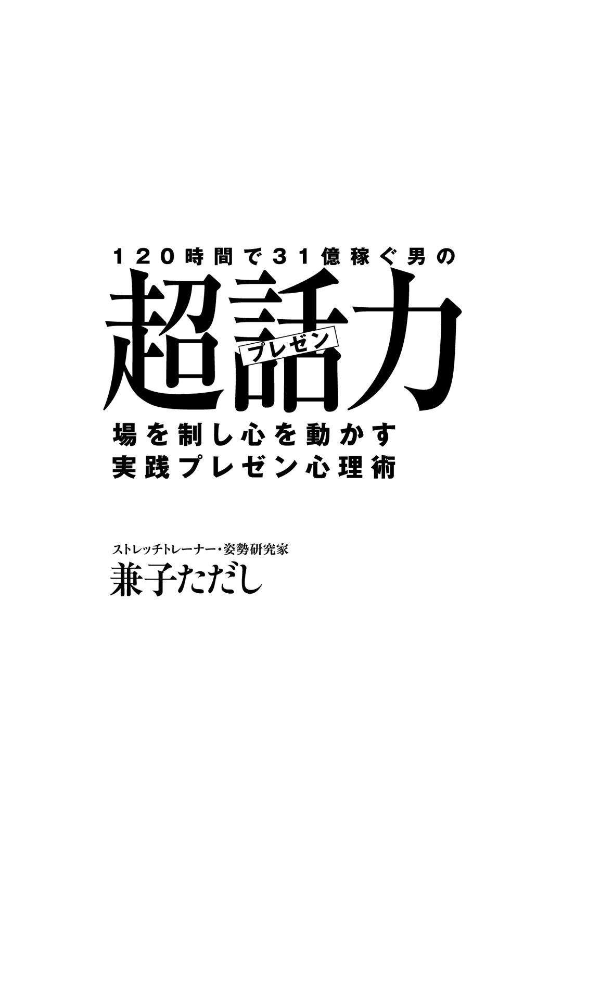
は じ め に
はじめまして。兼子ただしです。
みなさんは〝プレゼン〟と聞いて何を思い浮かべるでしょうか？ おそらくこの本を手にとった人にとっては、苦手であり、できれば避けたいことのひとつかもしれません。そして同時に、こうして本を読んで勉強しようとする姿勢から、ビジネスシーンにおいては避けては通れない重要なものであると痛感しているはずです 。世の中にはたくさんのプレゼン本があふれています。しかし、それらの多くは、実はまったくプレゼンスキルを掘り下げていないのも事実です。理論ばかりを並べたて、具体的にどうすればいいかは教えてくれません。
プレゼンに苦手意識を持つ人は「場をしらけさせず、よどみなく進行させること」を一番の目的にしがちです。ですからスムーズに行うためのテクニックを学ぼうとしますが、そこで必要とされるのはアナウンス力。プレゼン力とアナウンス力。その違いに気づかないため、どんなに本を読んでも、実践を重ねてもプレゼン能力が向上しない。もちろんうまくしゃべることは必要ですが、技巧的なコミュニケーションだけでは人の心は動かせません。素直で率直で、熱意があるのが真のコミュニケーションであり、それこそがプレゼン力。今求められているのは〝人の心を動かせる〟話す力 なんです。まずは、話す力の中にも種類の違いがあることを知ることからスタートしましょう。
あなたが目指すものは、アナウンサーではなくプレゼンテーターです 。
プレゼン力の有無で売り上げや年収も相当変わります。僕が出演している某テレビ通販番組でもその影響は如実。一般的にテレビ通販番組は生放送で商品をプレゼンします。テレビ局からのオファーがきっかけで、２０１１年７月から出演していますが、初回は１万２０００円の商品を１７００個売り上げました。この数字は初回では驚異的な数字です。僕の前に出演していた超有名な美容家でさえ、売り上げは７８００円の商品を４００個でしたから。初回から売り上げ平均２０００～３０００万円を毎回たたき出せているのもプレゼン力によるもの。今なお記録更新を続けていますが、その実績が１２０時間で31 億円 となり、本書のタイトルにもつながっているのです。
数字だけ見てしまうと「とてもじゃないけどマネできない！」と思われるかもしれませんが、ご安心ください。僕が実践してきたことはたったの３つ。とてもシンプルな３つの法則を守ってきただけなんです。それは、
１ プレゼンテーションでは自分を見せること
２ 相手とコミュニケーションをとること
３ 社会に対して還元するという公的動機を持つこと
以上の３つが僕の主軸です。中でももっとも重要なのが３番目の公的動機という信念を持つことだと考えています。僕の人生の目的は、姿勢教育を義務教育化して、Ｓ字の姿勢を広めること。僕の活動のすべてはこの目的のためであり、ゆらぐことはありません。社会人として一番強いのは、社会に還元したい思いがある人間なんです。この考え方ができるようになると、人生のゴールが見つかります。ゴールが見つかると、精神的にもゆらがず、誰かに媚びることもなくなるでしょう。
この本では今日から今すぐに使えるテクニックをつめ込みました。兼子ただし自らの経験から会得してきたノウハウですので、本番で使える実践的な超話力＝プレゼンスキルが身につくはずです。
「読み・書き・そろばん」といわれたかつての日本の教育では、世界を相手に戦えません。プレゼン力こそが生き抜く力。一番成功しやすい力とはプレゼン力 です。
ビジネスシーンはもちろん、より広い視野での幸せがつかめることでしょう。人生を豊かにする大きな武器を身につけてください。
兼子ただし
目次 C O N T E N T S
【第１章 】 １２０時間で31 億稼いだ男
【第２章 】 「話す力」は最強のビジネスツール。
必要なのはシンプルな「３つの法則」
法則１ ─「自分を見せる」
法則２ ─「コミュニケーション」
法則３ ─「公的動機」という武器
【第３章 】 人を「話力」だけでノセる実践プレゼン心理学
【基礎編 】負けないオーラをつくるのは話す「姿勢」
【初級編 】自分ペースに持ち込む心をつかめる話し方
コラム01 やってはいけない話し方
【しぐさ編 】ボディランゲージは本能。「話す力」を３倍にする！
コラム02 やってはいけないしぐさとクセ
【中級編 】交渉術の基本...「商品を売るな！」
コラム03 やってはいけない交渉法
【上級編 】相手に「ＹＥＳ！」と気持ちよくいわせる話法
コラム04 やってはいけない売りつけ方
【第４章 】 人生はアドリブ。こんなときどうする？
ピンチのときの臨機応変の話術
【第５章 】 プレゼンテーションは心のストレッチ
装丁・本文デザイン／佐藤 学（禅）
構成／長嶺葉月
校正／小島尚子
撮影／廣江雅美〈表紙・５章〉
モデル／比嘉バービイ（image）〈５章〉
編集／前田起也・亀田真弓（主婦の友社）
協力／スリーエスグループジャパン
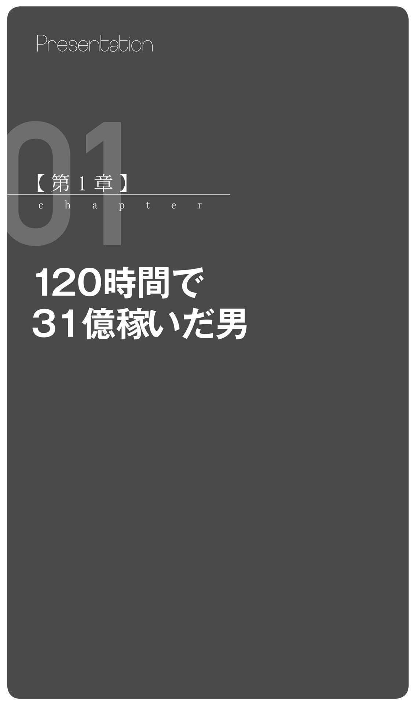
「１２０時間で31 億円稼いだ男」もプレゼンの一種
この書籍の帯にも入れましたが「１２０時間で31 億円稼いだ男」というキャッチフレーズ。これもプレゼンテーションの一種なんです。本書でも詳しく話していきますが「具体的な数字（実績）」というのは世界共通の言語です。具体的にいうと某テレビ通販番組の「生放送」で兼子がプレゼンをし、売った金額です。
24 時間×５日での売り上げが31 億円ということ。「24 時間で６億円」と書くのか「１２０時間」と書くのか「５日間で」と書くのか。
他にはこんな情報（数字）も持っています。
【通販の実績】
４時間で３万５２００足の「サンダル」を売り上げた
６時間で３億２０００万円売り上げた「ストレッチ用座椅子」
みなさんはどれが一番心に響きますか？ 兼子ただしという男を知らない前提でこの数字を聞く。兼子ただしは知らなくても、目の前の剃りこみを入れた男は、それだけの数字をテレビ通販でたたき出している。その数字を知ったあとには、兼子の言葉を「聞く姿勢」自体が根本的に変わることでしょう。数字というのは先ほども書いた通り、世界共通の表現です。イギリスでもスペインでも中国でもアメリカでもこの数字（実績）は変わりません。どうですか？
ただのドＳなストレッチの男と思っていたあなたも、兼子の話を聞く気持ちが出てきたのではないでしょうか？ みなさんが普段は見ていない（だろう）生放送のテレビ通販番組でこんなにお金が動いていること自体が驚きでしょうし、何より、キャストのプレゼンテーションだけで、深夜や早朝にもかかわらず、健康に関する商品がこういう売れ方をしていること自体がカルチャーショックかもしれません。机上の空論でも、書籍の上の理想話でもない「誰にでもできる」目からウロコの超実践のプレゼンテーション理論をこれから書いていきます。兼子がテレビ通販で行っていることは「見えない視聴者」との闘いです。しかしみなさんが会社や取引先、たとえばそれが就職活動の面接であっても「見える相手」に対するプレゼンテーションになっているはずです。訴えるべき相手が目の前にいる。実は根底では見えない視聴者も、見えている取引先でもそのプレゼン哲学は一緒です。技術的には少し変わりますが、訴える根本は一緒。
生放送のライブ感のすごさとは
生放送のテレビ通販番組で、さらにプレゼン力が鍛えられたのはいうまでもありません。
■「生放送」という失敗が許されないライブな場所であること（収録とは違い、やり直しはきかない）
■１万円近い高額商品を扱っていること
■衣食住と関連していない、日常で使う、扱う商品ではないこと
■番組の尺＝時間との闘い
■テレビカメラの向こうにいる見えない視聴者を説得すること
本書のタイトルの通り、プレゼン力＝話す力ともいえるかもしれません。話すというのは相手に伝える力のことです。
はじめてテレビの前でものを売ったのは２０１１年７月。テレビ通販の雄でもある有名な番組に登場しました。きっかけはテレビ局からのオファーでした。その番組はどんな有名人でも結果が出なければ１回きり。オファーの際には、そのことも告げられました。さらに数字分析は細かく、はじめてテレビ通販で買う人がどれくらいなのか、兼子が何をしゃべっているときに売れ行きが上がるのか、リピーターはどれくらいいるのか......すべては数字で結果が即出てくるのです。いわゆる毎回が「負けられない闘い」です。
ちなみに兼子の場合、あけっぴろげに書きますが、初回は１万２０００円の商品を１時間で１７００個売りました。これ「初回」では高実績です。その前の段階で、某美容家は７８００円の商品を４００個しか売らなかった。そこから売り上げ平均２０００～３０００万円を毎回１時間で上げています。月に２～３回のペースで登場。多いときは月に４～５回出演している。
考えてみてください。１時間の生放送プレゼンテーションです。
その結果、１２０時間で31 億円。
ではなぜ兼子がいきなりテレビの前でしゃべり、商品を売ることができたのか？
それは売る商品が美容・健康に関する商品ということで兼子が常に掲げているテーマにも近かったことがあります。ウエストがくびれたり、バストが上がったり。しかしその「幹」には姿勢をよくする＝背中にＳ字をつくる......という点で兼子の理論と似ていました。日本を元気にするために姿勢をよくしていきたい。だから背中にＳ字をつくるし、番組ではウエストをくびれさせたり、目からウロコな展開を映像にのせていきます。
でも大切なのは「幹」。枝葉では驚かせますが、常に変わらない兼子の理論であり、姿勢をよくする、日本を元気にする目的と商品がズレていないか？ 自分の発言にブレはないだろうか？ 発言の中にウソはないだろうか？ そんな条件を満たした商品だからこそ、プレゼンテーションを引き受けたのです。オファーをもらったからといって、自分の理念に沿わない商品ならば絶対に受けない。「これは売れる！」と自分自身が商品を含めて信じているから売れる。商品を見てから理由をあとづけするのは苦しいですし、本当に浅はかなことです。
バラエティ番組でも共演したことのある有名な某トレーナーは、やったこともないエクササイズの商品をテレビや雑誌で名前（冠）をつけて売ったりしている。ものを売るために理屈をくっつけている！ そんな商品がたとえ売れたとしても、その人の心は貧乏です。たとえば、この世界、本を出して売れたとしたって、１億か２億。そんなの数年後にはなくなっています。それは本を使ってのプレゼンテーションがまるっきりわかっていないということです。「目先のことじゃないこと」を考えて実践するのがプレゼンテーションの本質なんです。
お金、つまり商業的に偏ると自分自身が苦しくなります。兼子はこの本できちんとしたプレゼンの方法を紹介しているじゃないですか。それに則った正しい考え方、プレゼン、サービスなりのシステムを納得の上でつくっていけば、自分が弱気になって媚びることもない。媚びている自分はどんな人だって弱くなります。その次元で売れた、売れないなんてやっているのは本当にバカバカしいことです。
本当にきちんとものを売りたかったら、近道なんてありません
僕は10 年前、ストレッチ専門店を日本ではじめてやったわけですが、いわば生みの親。10 年前に日本のどこにもストレッチ専門店なんてなかったんです。みなさんもご存じの通り、街を眺めると最近のストレッチブームに乗っかってきている、マネしているストレッチ専門店も多いです。彼らの動機は単純。「ストレッチはもうかりそうだ」と思ってやっているのでしょう。街を見てると先日まであったもつ鍋屋がうどん屋に変わっている。今はから揚げ屋。「ウチがはじめてだ」とか「お店の数が多い」だとか、二番煎じ、三番煎じのくせにオレが一番だと手柄をとりにいくんです。手柄ならまだいい。彼らはただお金を、もうけを目的にしています。でも、マネする人が絶対できないことは何か......一番はじめにやった人には、もうかろうがもうからなかろうが関係なく、売れなくたって「やり続けられるエンジン」をしっかり持っているんです。でも、マネしている人は売れなくなったときにエンジンが止まるようにできている。「もう１回やるぞ！」とエンジンをかけられるくらい、その仕事が好きならいいですよ。好きだったらマネをしても生き続けられる。でも、所詮お金のためにマネしているものですから、もうからなくなったときに終わります。
一番はじめにやり出した人間としては、だったら「マネすんな」ってなるわけですよ。それはコソ泥のようです。たとえば「修行に行かせてください」「教えてください」。ひと声かけてマネするのは修行なんです。弟子入りなんです。ある意味、フランチャイズだったりする。ひと声かけて、承諾される。曲でいったらカバーです。それをしないで歌うとコピー。犯罪になってしまいます。
話が少し脱線しましたが、プレゼンでもっともしちゃいけないのはその「コピー」なんです。もうかりそうだから、うまくいきそうだから、成功している人がそうしゃべったからマネをする。マネしていいんですよ、別に。マネすることは学ぶことですから。でも、そこでひと声かけるかどうか、礼儀を入れるか入れないかで真っぷたつに分れます。だまって盗 ると窃盗で、ちょうだいっていえば盗ったことにならない。ひと言いえばいいんです。人のマネを「そのまま」するような、たとえ経済的に豊かであっても、心が貧乏になるようなことをしている人はプレゼンテーションができない。マネタイズなんていうのも最近聞きますが、兼子にいわせれば「マネたい心」は「学ぶ心」に切りかえる。あとで書きますが、兼子だって20 代の頃は話すために人のマネをすることから始めました。でも当たり前ですが、そのままマネしてもうまくいかない。
「まねる」「まねぶ」「まなぶ」......この言葉の変化（違い）にどれだけ早く気づけるか。まねるはコピー。きちんと許可をとりましょう。まねぶはそのマネから一歩進んで解析して自分なりに学ぶ。まなぶとはそこからオリジナリティをつけ加えて自分のものにしていくこと。つまり自分自身に気づくということでもありますが、それはどれだけ一生懸命その仕事なり、プレゼンの内容なりに惚れ込んでいるか、信じきっているか。それしかありません。ここから何度も出てきますが、俯 瞰 から、第三者の視点から自分自身に「気づく」こと......本当に大切なことです。
極度の「人見知り」だった兼子が変わった上司の言葉
兼子はまわりから見ると、10 代でヤンチャしすぎて、バイクやケンカに明け暮れ、あげくの果ては、少年院へ（笑）。詳しくは拙著『強く生きる「ドＳ」55 の言葉』（主婦と生活社）をお読みください。
今はこういうトレーナーの仕事をして、経営者として年商もそれなり、テレビではベラベラしゃべって、テレビの通販番組での売り上げはハンパない。しかもこのようなプレゼンテーションの書籍まで出している著者でもある。しかもキックボクシングでは日本ランカーで......思い切り体育会系のヤンチャなドＳトレーナーとみなさん感じられていると思います。でも......実は極度の「人見知り」というのが兼子の本質でもあるんです。その話をすると誰もが「信じられない！」というリアクションを必ずするのですが、今でも極端な人見知りなのです。話し下手で人見知り......そんな男が今プレゼンテーションの本を書いている。それだけで十分、読者のみなさんも勇気がわくのではないでしょうか。みなさんがテレビや雑誌などで見ている兼子ただしは、後天的な努力によって培われたキャラクターでもあるのです。プライベートではいまだに本当に人見知りなんです。それをどうやって克服していったか、みなさんにも教えたいと思っています。この本の裏コンセプトは「人見知りでも必ずプレゼンがうまくいくための本」だと思っていますから。
20 才になって、兼子は寝具を売る会社で働いていました。「歩合制で自分次第で稼げる」とのふれ込みでした。それまでは、調理師免許をとったので料理関係の仕事をしようかなと思っていました。しかし「よし、布団を売って金を稼ぐぞ！」「稼いで独立して自分の店を出すぞ！」と。ここまではよくある話ですし、自分の夢のために歩合制でかつ高額なキャバクラで働く女の子のようなものです。しかし結果的に、この布団の販売こそが兼子の生きる学校となっていきました。
しかもこの会社、40 万円もする布団のセットを大勢の前で説明したあと、訪問販売していくスタイルでした。チームになってリーダーがいて、指示が出ます。いわゆるお客さんへ直接営業する「見える相手」へのプレゼンテーションです。
最初はまったく布団が売れませんでした。そりゃ当たり前です。僕の失敗というかその売れない原因はまさに「人見知り」だったのです。とにかく人見知りが激しいことが、それ自体プレッシャーになって自分自身を追い込んでいきました。訪問販売の営業マンが人見知り......って、ほとんどコントです。おどおどして、挙動不審の小さな声しか出せない人間から、40 万円もする布団を買います？ 人見知りの人って、たいてい「あの人に話しかけたほうがいいけど......まぁいっか」となってしまう。兼子もそうでした。
そんな兼子がなぜ人見知りを打破できたのか。実は21 才のときに最初の「気づき」があったんです。当時の上司から教えてもらった大切なことがひとつあります。
「仕事でウソをつくな」
それは「（布団の）知識がないならウソをつかず熱心にやれ」「ウソをついたとき、心は弱くなる」ということ。これはいまだに兼子が仕事をしていく上で大切にしている言葉です。確かに40 万円もする布団です。その場で話すだけでなんとか成約させるのは難しい。ローンも組んでまで買ってもらうお客さんだって多いですから。そう考えると、布団について大げさに伝えたり、自分がわかってもいないのに、知ったかぶりの知識をひけらかし始めたりする。先輩のトークをマネするだけで何もわかってないから、当たり前ですが契約は決まらないですし、目の前のドアは閉められてしまう。
そしてもうひとつ、大切なことを上司から忠告されました。兼子が人見知りだということは当然彼から見ていればわかるだろうし、契約もできないダメ社員ですから。
彼はこういいました。「人見知りすること自体に意味はない」。そして「それはお前の勝手な自我である」と教えられたんです。「お前の人見知りはウソだ」ということです。要するに自分で勝手に恥ずかしがっているだけ。お客さんはお前が人見知りだろうが知ったことではない。売っていく布団とお前が人見知りなのはまったく関係がないことである。まさに「人見知り」を標榜している兼子こそが「ひとりよがりで自分勝手だ」ということ。
お客さんの前で立ちすくんだり、人見知りするのは、まさに自分の勝手なんです。なるほど......人見知りは自分の性格ではなくて、ただの自分勝手なんだ！とわかったんです。そう考えをチェンジできるようになって、人見知りをなくして、表向きは「自我」を捨て、自分から人に話しかける努力をしました。人見知りすること自体が一番問題だってことを、布団を売っていた時代に学べました。
その頃の僕は、今思えば〝知識でなんとかしよう〟〝うまく切り抜けよう〟とか、〝話法を覚えて営業成績を上げよう〟としか考えていなかった。そんな上っ面のテクニックだけで営業できるような年齢ではなかった。お客さんが自分の何を見ているのか考えもしないで、自分の金もうけだけを目的にしてやっていたのです。
その上司は当時のトップ営業マンでした。彼のいいつけを守って１年後、営業成績としては40 万円の高級布団を１２０セット売ることができたのです。３年連続でなんと３０００人の社員の中でトップセールス、つまり一番の成績を上げることができました。
当時、上司にいわれて守っていたことは、先ほども書いたように「ウソをつかず、熱心にやれ！」のみ。それが最初の頃の僕のノウハウのすべてだったんです。知識がない分、お客さんに説明し終わったあとの質問の受け答えでなんとかフォローをしていました。今とは比べものにならないほど当時は商品説明＝プレゼンテーションが下手でしたから、商品を触ってもらって、そのよさを直接感じてもらうしかないんです。それはもう熱心にやっていました。その布団のウリ文句は今振り返ると数字を使ったプレゼンもしていました。よく出てくるフレーズでもありますが「人間の睡眠時間は人生の３分の１」。そして兼子は心の底からお客さんに向かってこういいました。「30 年使えます」。
仕事でウソをつかない......その教えを今も守っていますし、お客さんとの約束にもウソをつきたくない。だから今、都内某所のタワーマンションの最上階の部屋に住んでいるのですが、僕のベッドには当時売っていた布団がまだ敷いてあります。21 才のときに売った布団......30 年は確実に使えますから51 才まで使ってなければおかしいので。その布団を売った相手にウソはつきたくない。少し表面はボロボロになっていますが、毎日使っています。
28 才、本当の「豊かさ」とは何か気づいた
今、考えると上司のいうことを、きちんと「聞く耳」を持って聞いていた点ではめちゃくちゃ素直だったといえるはずです。この「素直」というのはすごく重要なことだと大人になるにつれて思うようになりました。当時、茨城から上京し、東京でどんな職業があるかわからず、それまでガードマンのバイトをしていたくらいで世間知らず。上司の言葉に「そんなこといったってさ～」とか逆らったことがなかった。それがうまくいったコツかもしれないですね。もうひとつ決めていたことは「上司に対して否定と質問はしない」ということでした。まずは黙って素直に指示されたことをする。全部行動に移していく。つまり質問をするのって、本質的にいえば、自分の責任をチャラにする、ゼロにするためにしているってこと。己の責任を上司に押しつけていることと同義です。
この布団の営業の仕事は28 才まで続けました。先ほど書いた通り、上司に教えてもらった「仕事でウソはつかない」を実践し、次第にリーダーになって部下を持つようになっていきました。23 才ではじめて部下を持ちましたが、どうしても部下を育てられなかった。そんな挫折にぶち当たりました。自分自身は布団を数多く売ることはできましたが、今度はそのノウハウを含めてチームの部下が売ることができず辞めていく。スタッフの指導、とりまとめができないということです。これはつらかった。ある意味、本質でもある人見知り気質が、部下の前では顔に出てしまっていたのかもしれません。部下を持つと当然大勢の人の前で話す機会も増えてきます。これまでは個人宅を訪問すればよかっただけなのに、大勢の人の前で話す。ようやく人見知りを克服したのに......ゼロに逆戻りか、と。いわゆる司会の、ＭＣの技術が足りなかった。今ではテレビはもちろん六本木ヒルズの何百人、何千人がいる前ではしゃぎながら、余裕を持ってイベントの司会などをやっていますが、当時はそういかなかった。また別な上司からはこういわれました。「お前がこのパーティーの場でボーッと立っているのは誰のためにやってるんだ？」。自分からしゃべりに行かない、しゃべってもモゴモゴしゃべる、気を使ってない。一番ガーンときたのが「お前は己を守ってるだけだろ」という言葉でした。人見知りもそうでしたけど、大勢の前で話すのに躊 躇 していた自分は、自分を守っていただけなんだと。また、目からウロコが落ちました。だから今ではどんなテレビ番組でも、イベントでも緊張はしません。それは慣れやテクニックではなくて、「人によく思われよう」なんて１㎜も思わないようになったからです。
リーダーを経験し、部下を持てるようになり、どんどん自分の組織が大きくなっていくのがわかっていきました。当然、もうけも増えていきます。好きな車を好きなように買って、金は余るほどある。女性にもモテる。自分が世界を回しているような気分になってきます。でも28 才のとき、人生でもっとも大切なことに気づいたんです。「知らない人に喜んでもらいたい」という人として根源的な部分を、自分自身が欲していた。つまり体が欲していたんです。それは自分の中に芽生えていたものなんです。本当の「ステイタス」とは持っているお金でも、住んでいる家の豪華さでも、クルマのすごさでもなくて、公的なステイタスなんだ、と。布団の仕事を辞める間ぎわに、そこに気がつきました。「名前も知らない人に喜んでもらいたい」。それこそが「公的動機」であり、兼子の人生の上で目指すべき目的なんだと。目からウロコが落ちました。ここから本当の豊かさであり、本当のゴールを、アクセル全開で目指そうと決心しました。
独立。「公的な動機」のために立ち上がるも挫折続き
兼子は10 年前、日本ではじめてストレッチ専門店を出しました。28 才のとき、「公的な動機」、そのステイタスに気づいて独立したものの、最初は苦戦続きでした。「ほぐしや本舗」っていうマッサージ屋さんもやっていました。でもそのお店は閉店することになったんです。店舗の中でひとりで泣いていました。親父が死んでも、フラれても、離婚するときも泣かなかったけど、自分の店が閉店したときは泣いた。泣きに泣きました。
そのマッサージ店である「ほぐし屋本舗」をやっていたとき、その中にストレッチコースを設けたんです。そちらのほうが人気が出た。一時的にもみほぐしてもらうより、根本からこらない体づくりをしたほうがいいなと。よくたとえで出しますが「幹と枝葉」。枝葉の肩痛や腰痛をほぐすよりも、その前の体づくりが人のために、社会のためになるのではないかって思ったんです。でも、その時代......10 年前にストレッチだけの店を出すことって、そのときはすごく勇気が必要だったんです。誰もそんな店やったことがないですから。これは勝負だなと思って、今の「スリーエス」（ＳＳＳ）に社名を変えて、笹塚から池袋に店舗を移動して再スタートを切りました。そこでの気づきは、「人に求められていること」をちゃんとやらなきゃいけない。ストレッチ専門店という新しいジャンルをつくろうと、事業にしようという目的を持った結果、今がある。最初は施術ができるのも僕しかいなかったし、お客さんもあまり来ないから、社員５人中の３人はビラまきが仕事なんて時期もありました。そんなときに、あの有名番組だった『マネーの虎』に出演することになったのです。まさにプレゼンをテーマにした番組ですよ。兼子の切り口は「成田空港に日本でも新しいストレッチ店を出したい」。その資金１５００万円を出してもらうためにテレビに出ました。プレゼンがうまくいかなくて悔しかった。出演者の納得さえ得ることができなくて。そのときは、お金をもらえるように、有名な社長たちに気に入ってもらえるように......っていう軸足がない「媚びたプレゼン」をしてしまった。当時やっていた日本初のストレッチ専門店のことも話してはいたんですが、話しているときの心根がやっぱり媚びていたんです。成田空港に設定したのも、空港にあったら珍しくておもしろそうだからで、あとづけだったんです。結局そこをツッコまれたんです。「成田空港だったら、店を気に入ったって通えないじゃないか」って。その通りですよね。自分自身がプレゼン相手に媚びて、お金を出してもらえるようにと思って仕込んだ作戦に足を引っぱられた。成田空港という、とってつけた「あとづけ戦略」のために軽いものになってしまった。それはすごく悔しいなと思って、何年かあとには自分が「虎」として出演できるように、テレビに出たら媚びないようにがんばろうと、プレゼンテーション力を上げていく原動力にもなりました。さっきも書きましたが、兼子は素直がとりえですから、『マネーの虎』の虎たちにいわれたツッコミを素直に実践してみました。ある意味、実際に「プレゼンをし直す」ということをやってみました。やはりお客さんが通いやすいところに店舗展開していかなきゃ、と。気に入ってもらったら通えるように。つまり東京の主要都市に出さなきゃなと。だから、池袋、新宿、渋谷と通える範囲内に店舗をオープンしていきました。
プレゼンに負けたこと、それ自体を力に変えて、プレゼンし直していく。第三者の思考を持って振り返る。負けても負けてもやり直しはききます。
先日、キックボクシングの「日本タイトルマッチ」で負けたんです。その映像は２日くらい見られなかったんですけど。いつもはそんなことないんですけど、自分自身、相当悔しかったんでしょうね。42 才でチャンピオンに挑戦する。まわりは半分イベントのような感覚だったと思いますけど、兼子は本気でチャンピオンベルトをとりにかかった。映画の『ロッキー３』でもありましたが、年齢は関係ない。まだまだチャンピオンになる気力も十分にあります。だからそのあとは繰り返し見ました。負けた試合を見ると、次にこうすれば勝つなって。でも会場は結果的にものすごく盛り上がったんですよ。負けても盛り上がるんだっていう発見がありました。第三者の、俯瞰の視点で自分を見ること。できれば負ける前にそこまで見ることができれば、プレゼンでも負ける確率は減るはずです。
先ほど兼子の若いころの寝具の営業の話を書きましたが、兼子がいまだに恩師と勝手に思っている上司がいました。彼は直接の部下ではない、預かりの身であった兼子を損得関係なく熱心に教えてくれました。兼子が布団をいくら売っても彼の利益にはなりません。それでも誰にでも熱く教え、彼自身の損得を考えず動いていた人でした。貴重な時間を自分の利益と関係ない人間のために割いていました。兼子が彼から学んだことのひとつは「その人を信じていいかの見極めは損得をとる人なのか、道理をとる人なのか」ということでもありました。プレゼンテーションもプレゼンを受ける側から考えるとその通りで、プレゼンをしている人間（あなた）が自分の会社だけの利益のためにしゃべっているのか、それとも直接の利益とか損得関係なく、商品をすすめているのか......。プレゼンを受けている側の人間から見れば、あっという間に透けて見える部分なのだと思います。
質問です──商品を売るコツはなんですか？
ここまで書いてきた通り、兼子ただしもまだまだ社会を幸せにするために活動する発展中の人間です。今は「姿勢教育を義務教育化したい」という公的な動機を掲げて、日夜プレゼンテーションに明け暮れています。そのプレゼンはテレビ通販番組のときもありますし、渋谷１０９の前で通行人や若いギャルたちに訴えるときもあります。わずか３分、バラエティ番組に出るときでもそのことを念頭に、タレントのウエストを瞬間でくびれさせたり、目からウロコなダイエット的な話もしています。どんなときでも心にまずあるのは「姿勢教育を義務教育化したい」というその一念です。
以前、あるテレビ番組で日本の通販王として僕を含めた３人で登場したことがあったんです。そのときに、商品を売るコツはなんですか？という質問があった。ひとりは「商品の知識だ」、もうひとりは「しゃべりのテンポ」だって答えたんです。
僕は「売る気持ちをなくすことだ」と答えた。
他の２人は、チーーーンって目が点になっていました（笑）。この３人の中で僕が一番実績があったのですが、これが商人と指導者の違いなんです。アナウンス、つまり営業トークは「商人」のすること、プレゼンテーションっていうのは「指導者」がすること。うまくしゃべる指導者なんていらないんですよ。プレゼンの根本は〝熱い思い〟です。社会に対して貢献する知恵や考え方をしっかり持っているしゃべりなんです。これがわかっているテレビ通販の人は今のところ兼子以外誰もいないはずです。同じ土俵に上がってこないと勝負にならない。
その商品を買おうかなと思うときって、その人を尊敬 していないとできない。
「プレゼンテーション」と「指導者」はセット。商人になってしまっている人のそれは、アナウンスであり営業トーク。それしかできない。すごく上手なしゃべりでも尊敬はされない。人に指導をする教育力がないし、スピーチをしてうまくしゃべっても耳を傾けてもらえないはずです。テレビ通販でも元アナウンサーという肩書きでものを売ろうとしている人がいますけど、一番売るのに困っています。たとえば芸能人がものを売るとき、芸能人って影響力があるんですけど、その人たちがものを売るとき、なんとなくうまくしゃべって商人になろうとしている姿はものすごくあわれ です。それを指導者になるように、きちんと商品やサービスの裏づけ、社会に必要性があることを納得して消化してしゃべることができたら３倍くらい影響が変わってくるはずです。おそらく商人的に売っている人とは、まったく次元が違う力で僕はしゃべっているから売れるんです。
まさにプレゼンテーションがうまいか下手かは、笑いがとれるかとれないかもあります。プレゼンのよしあしはお笑い芸人の力量にもつながっていると思いませんか。「多くの人を笑わせてやる！」と野望を持っている人はずっとおもしろい。いろんなバラエティ番組に出演させてもらって、ホントに笑える人ってカメラが回ってないときもおもしろい人。兼子がその昔、擦り切れるほどビデオで研究したダウンタウンの浜ちゃん。兼子が見て感心したのは本番中なのにライトの位置、マイクの位置を気にしていたり、合間に普通の話題で話ができるんです。そういう人たちに共通しているのは「気が使える」「アドリブがきく」人でもある。兼子もアドリブがきかない時期がありましたけど、その当時は自分の利益しか考えてなかった。アドリブが身についてきたな、と実感できたのは、日本のためにがんばっている人を見て、「カッコイイ」と素直に思えるようになってから。本当に影響力がある人というのは日本のために、地域のためにやろうとしているんです。リアルヒーローは国の代表になれる。かといって、今からオリンピック選手になるのは難しいじゃないですか、となると競技以外でもできることはあるわけで、それが兼子にとっての「姿勢教育」だったんです。
プレゼンテーションというのは人にものを教える、教育する話法なんです。ただ単に文章を読んだり、台本にあるセリフをいったりすることではない。だから自分が人に尊敬される、人を尊敬する心や美学を持っている人ほど、プレゼンテーションを絶対学ぶべきだし、日頃からやり続けたほうがいい活動になりますし、人から尊敬されるきっかけになります。思うに、人間って人から尊敬されてなんぼ。金を持っていようが、尊敬されてなければ貧乏と同じ。 金をそんなに持っていなくても尊敬されること自体が財産なんです。今、僕が話していることを実際に行動としてやっていくと、金もうけを意識してなくてもお金って入ってくるんですよ、自然と。目先の金のためだけにがんばっても、あとが続かない。そう思いませんか？
つまり尊敬心の拡散で世の中は平和になっていく。欲望だけだったら犯罪が増えます。プレゼンとは人前できちんとした考えをかためていく作業。そのあり方を根っこから変えたくてこの本を出したのです。自分の心を定めていく「動詞」がプレゼンテーション。兼子流にいいかえるなら「心のストレッチ」こそが、その人の心を定めていくのだと信じています。結果がどうであれ、堂々と「私はこれを伝えたい」と読者のみなさんも本書を読み終えたとき、強くなれるよう、願っているのです。
「ドＳのココロ」こそがプレゼンテーション成功への近道
プレゼンテーションは私たちの仕事を成功させる上で、もっとも近道ともいえるスキルです。そのスキルを持つには「人のパクリをすると一生できない」というのは前述しました。なぜならそこには信念がないから。では信念ってどうやって持つか知っていますか？ そう......小さい頃に誰でもヒーローに、その正義感あふれる姿に憧れたはずです。そのヒーローにあなたがなれれば、なるつもりさえあれば、自動的に信念はついてきます。ヒーローというのは境界線がないんです。家族にだけ、この地域だけ、とか「くくり」がないんですよ。ボーダーレスです。つまり「みんな」のヒーローであり、ある意味での「日本代表」なんです。
日本代表的なヒーローにあなたはなりたいですか？
イエスと思う人はプレゼンができる。
自分が「日本代表」なんて......と思う人も中にはいるかもしれませんが、そんなに難しい話ではありません。日本代表の美学とは何か......それはヒーローに「なれる」「なれない」ではなく、「なりたいか」「なりたくないか」の二択。みんな、心の中ではヒーローになりたいと思っているはずなんです、なりたいならば、なりましょう！というすごくシンプルな話。いいかえれば誰でも信念は持てるようになるし、信念があればプレゼンができるようになる。ヒーローになりたいのであれば、自分がやっている仕事が社会にどんな利益を与えるかを何よりも優先して考えるべきなんです。これはヒーローになるための「考え方の順番」ともいえるはずです。社会への利益という動機がまず何よりも先立って、日本代表としてのあなたの目的が存在した上でのプレゼンテーションをする。会社や個人の論理よりも社会をどうよくしていくのか。あとでも詳しく書いていきますが、自分を捨ておいて、まず社会のために......そう声高に叫ぶ人の話には、みんな耳を貸すと思いませんか？
自分のことを先に考えてしまうのは凡人なんです。たとえば会社員が自分の会社の利益のためだけにプレゼンテーションをする。一番多いパターンですよね？ それは二流の人間がすることです。だからうまくいかない。会社の利益よりも社会の利益。実際は社会の利益があってこそ、会社の利益になっていく。先述したヒーローの論理であり、信念です。人に何かを真剣に伝えるのはプレゼンのテクニックじゃありません。「公的な動機」であったり「公的なテーマ」さえ自分の中にあれば、それを伝えればいいだけの話なんです。そしてそのことこそが兼子式プレゼンテーションの本質でもあります。
これってつまり「ドＳ」の道でもあります。兼子はまさに「ドＳトレーナー」と自他ともに認め、まわりからも呼ばれているのはご存じのはずです。だけど「Ｓ」といってもエロティックなＳではなくドライなＳですよ。
サディスティックはバカじゃできない。相手の心理を読む、欲望を満たすようにサービスを考える、これがサディステック......「Ｓ」の基本なんです。それで「Ｍ」に対して主導権を握る。これはほぼプレゼンと同様で、心からの思いやり＝つまりサービス精神が必要です。Ｓの人間は相手の欲求を満たすようサービス精神を持ち、言葉を巧みに使いながら相手の心の内に入っていく。自分本位に考えている「Ｓ」はＳとして成り立ちません。本当のドＳは相手の欲求を考えますから。相手に喜びを与えることに、喜びを感じる。喜びを感じるランクが凡人よりもうひとつ上なんです。
つまりプレゼンテーションには「ドＳ」の心構えこそが必要なんです。これだけは覚えておいて損はないです。社会は「ドＭ」なんです。「ドＭな社会に何かを与えなさい」ってことなんです。通販番組をやるとき、テレビカメラの向こう側の「Ｍ」な視聴者＝お客さんに対して、兼子ただし＝「Ｓ」がプレゼンテーションをしている。だから売れる！ たぶんプレゼンがうまくいかないという人たちは、社会という「Ｍ」に何も与えずに、自分が何かを与えてもらおうとしているのではないでしょうか。それは利益なのか、地位なのか、名誉なのかはわからないけど、そんなのは甘いです。プレイが成り立っていない。ドＳなら「何してくれるの？」じゃなくて「何されたいの？」と聞くべきでしょ。今の人たちはドＳ要素が足りないのだと思います。ドＳ的な思考があるとプレゼンテーションは一気によくなる。兼子はテレビでもよくいっていますが、Ｓは親切のＳ、サービスのＳなんです。本書の読者はいわゆる「サラリーマン」の方が多いと思います。ではどのようにドＳなココロを持って、公的な動機を見つけていくのか？
自分がやっている仕事に価値を見いだして、◎◎業の日本代表になるということを目標にすればいいんです。価値を見いだせないことなんてない。どの職業も、職業にムダはないんです。必要のない職業ならとっくになくなっているはずなんです。ということは、１００％世の中に必要な職業なんですよ。風俗業に至ったってそうです。その必要な仕事を世の中のためにどう生かしたらいいかをちゃんと考えていないから、案が出てこない。そうなったら、給料をもらう、休みが多いか少ないかのジャッジしかできなくなっちゃう。社会をどうサポートして、これからの日本にどう役立つのかを考えるべき。考えないとやっぱりわかりませんよ。ただの「思い込み」みたいなものでもいいんですよ。大人が聞いてもなるほどと納得できるような公的な理由。自分が納得すれば何も怖がる必要はありません。
１２０時間で31 億円。金もうけとか金にしか価値がないと思っている人もドキッとするし、「超話力」ってなんだろうとか。
兼子がプレゼンテーションをテーマにした本書でもっとも伝えたいのは先ほども書いた「心のストレッチ」です。心のストレッチとはつまり兼子が日夜となえ続けているＳ字姿勢。姿勢を整え、深い呼吸をして、元気に大きな声で社会に役立つテーマを出す。これがプレゼンテーションの基本です。プレゼンはスキルではなくて、その人そのもの。社会に対する利益を考えたりすることによって、人間自身の心を変えることなので「心のストレッチ」と命名しました。心の矯正ともいえます。今、社会がよくなるようなテーマを持っていない人は、プレゼンそのものができないはずです。スタート地点にすら立てていない。プレゼンができる人には必ず公的な動機があるし、社会に役立つための動機を持っているんです。こんな本出しちゃったらマネする人が増えちゃって困るんじゃないですか？なんて聞かれることがあるんですよ。でも、それは逆。
マネする人が増えると社会のために何かをしようという人が増える＝プレゼンができる人が増える＝日本の社会は必ず活性化する。
だからどんどんマネしてください。さっきパクるな！ 許可をとれ！と厳しく書きましたが、本書の読者に限っては心の中で許可をとってくれればいいですから（笑）。熱い思いを持たず、社会のためを考えずうまくしゃべろうと考える人は、一生僕らに勝てないはずです。
この章のあとには実践編が始まります。普通のプレゼンテーションのマニュアル本と違うのは、今日から使えるテクニックがあるのはもちろんのこと、繰り返ししつこいくらいに出てくる「公的動機」という言葉を正確に読者のみなさんに理解していただきたいのです。極端にいえば兼子流の、１２０時間で31 億円を稼いだプレゼンテーションのコツはこの「公的動機を持つ」に集約されます。そこが「幹」であり、あとは「枝葉」のテクニックです。ある意味、１ページで終わるような内容です。兼子が５秒でくびれをつくるのと同様です。Ｓ字姿勢が「幹」であり、くびれはその結果です。でも人間はＳ字姿勢という正しい姿勢がキープできないから悩んでいますし、ムダなダイエットもするのです。キープできないからこそ、繰り返し染み込むようにいい続けていきます。何度もいいますが、テクニックは「枝葉」です。「幹」こそ重要です。
自分の中に太い幹をしっかりつくっていきましょう。
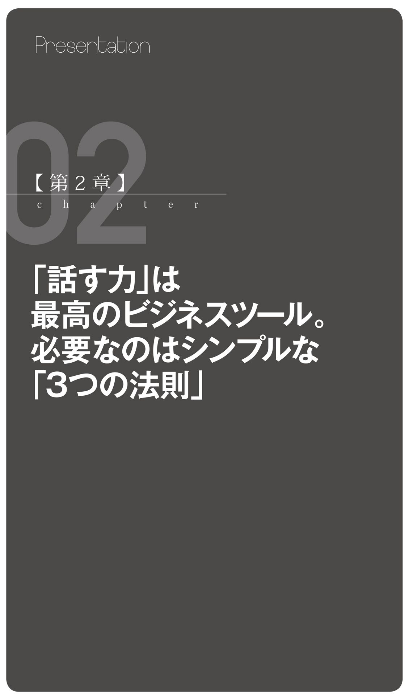
Rule
法則１......「自分を見せる」
自分を見せる...自己紹介とは？
相手が主役、自分は脇役
相手の要望に沿って自分を見せる「サービス」のこと
自分のためにという利己的思考を捨てよう
自己紹介とは何か。シンプルな質問です。
よく「自己紹介の仕方がわかりません」「自己紹介は緊張するのですが」「自己紹介が難しいのですが」という質問を受けます。兼子からすると、なぜそんなに自分を紹介するのに難しさや緊張を感じるのかわかりません。ただ苦手意識を持っている多くの人には共通点があります。それは自己紹介において自分をカッコよく見せようという利己的な思考です 。この章の大きなテーマである自己紹介とは、自分を見せるということ。もっと詳しくいえば、それは自分のためではなく、相手のために自分を見せるんです。このように説明すると、自己紹介ってなんですか？と質問した人からは「なるほど！ 目からウロコです」といわれることが多いです。自分をカッコよく見せるために自己紹介をするのではなく、相手のために自分を見せる作業。これがプレゼンの大前提です。
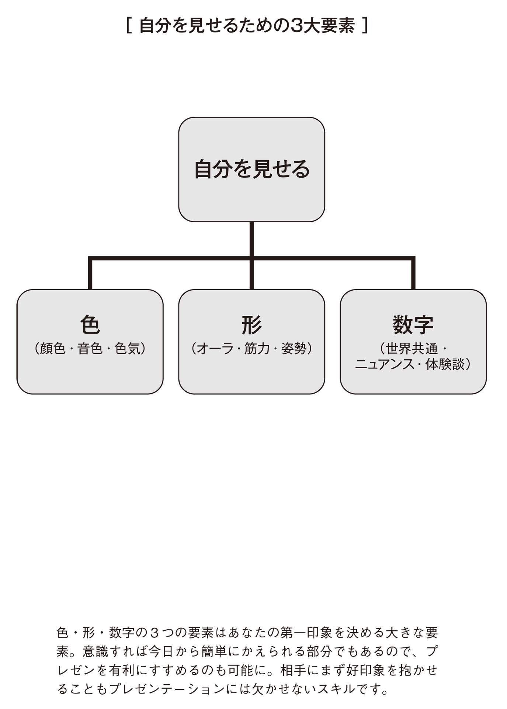
「何を求められているか」を考えることから始めよう
簡単にいうと、自己紹介とは相手の要望に沿って自分を見せる作業であると説明しました。すると相手が主役、自分が脇役という図式が成立します。あくまで自分は脇で、「私はこういう人間です」と人に説明すると思えば気持ちがラクになりませんか？
たとえばテレビ局の人に自己紹介をするとしましょう。兼子は自分がどんな人間なのかを説明するときに、まずテレビ局の人は何を求めて、自分に声をかけてくれたのかを考えます。相手のメリットになることを想像すると、この場合は自分が視聴率をとれるという体験談を語るのが最適ではないでしょうか。テレビ業界の人は視聴率という数字で勝負する世界で生きているので、確実に数字に興味を持ってくれます。「Ａ局では僕が出演すると視聴率が◎％上がるといわれます。Ｂ局では出演後、商品の売り上げが◎％増えました」と単に体験を話しているだけでも、相手のメリットとその内容がリンクしていれば、実はそれだけで自分を見せている作業になるのです。まず相手の立場に立って自分の体験談を語ることこそ、自分を見せることのひとつ。そのためには、相手の立場だったらどうなのか？ 相手は自分の立場をどうやって見ているのか？を俯 瞰 からとらえることが重要です。あとからも出てきますが、体験談に色・形・数字の３つの要素を加えたものがプレゼンの超基本 になるので大事にしてください。
刷り込まれた「３」という数字を盛り込め
自己紹介に重要な、色・形・数字の３つの要素についてふれましたが、今後も３という数字が何度も登場します。なぜ法則を３つ出すかというと、人間は「３」という数字に依存しているからです。その理由はとても簡単。人間の基本は３つのパーツからできています。まず頭・胴体・足の３つに分けられます。ちょっと自分のひとさし指を見てください。ほら、節が３つに分かれているでしょう？ こうして日頃から知らず知らずのうちに、人間は意識の深いところで３という数字がインプットされているのです。多くのビジネス書においても、注意して読んでみると３という数字がよく登場します。たとえば、何か案を求められたとき３つ答えを用意するのがプロフェッショナルです。相手を想像した上で必ず３つ案を準備しておくと、高い確率でその中のひとつが通ります。２案の場合だとどちらもＮＧで「もうちょっと考えて」といわれかねませんが、不思議と３案の場合はその中から選ぼうという心理が働くものなのです。「３つ案を用意しろ」とよくいわれるのはこういった人の中にある本能的な理由があるからなのです。
話のついでにプレゼンのテクニックをもうひとつ。先ほど「ひとさし指を見てください」といいました。そういわれると人って自分の手を見ながら、「１、２、３......」と数え始めてしまうものです。プレゼン中、こうして相手にアクションを起こさせて３という事実を体で認識させる。相手を説得するときは、頭で考えさせるより体を使って体験をしてもらうというクッションをはさみましょう。あなたと同じ行動を相手がとることで、気持ちも瞬間的にシンクロさせることが可能になります。自分を見せる作業に相手が入り込みやすい状況をつくるのです。それにプレゼン中、相手はだまってこちらの話を聞いてくれているわけではありません。一方的に話されているだけでは誰だっておもしろくないですから次第に自分も口をはさみたくなるものです。すると何が始まるかというと、相手は手元の資料を眺めながらツッコミどころを探し始めます。否定する理由を考えます。そんなときに考えるきっかけを与えたり、行動を促したりするのが有効なのです。実は兼子はプレゼン中にそういうことをたくさん仕込んでいます。
僕が話している最中に相手にクイズを投げかけるのは、自分のために相手の時間を費やしてもらっているので、せめて楽しませたいというエンターテインメント性を出しているから。自分の脳で考え、自ら行動してもらうことも、相手への気配りの代表的なテクニックといえます。
気配りの心があれば自ずとやるべきことが見えてくる
気配りとは相手の立場に立って徹底して相手のメリットを突きつめていくこと。
たとえば、就職活動の面接があるとします。面接官がその場に５人いて、その人たちは朝から１００人以上面接してきていると想定しましょう。まず「疲れているだろうな」と容易に察することができます。
さて、ここで自分が面接官になったとしましょう。まるで原稿を読んだようなクソつまらない受け答え、何百回と聞かされたマニュアル回答をされたらどう感じますか？ おそらくどっと疲れが増します。
ならば、受かりたいという欲望ではなくて、これから一緒に働く人であろう面接官を何かしら癒してあげるのが正解ではないでしょうか。もちろん「お疲れですか？」とは聞けませんから、その代わりになるような面接の受け方を考えるべきです。このように瞬間、瞬間で相手の立場に立って考えるのは社会人の基本。しかしこの基本ができないから多くの人は困っている。
実は、「自分が成功したい」「自分がお金持ちになりたい」だとか自分のことを考える前に、「相手を有名にしたい」「相手をお金持ちにしたい」「相手を癒してあげたい」と行動するだけでビジネスの質が変わります。あなたが営業マンならば「営業先の困っていることはなんだろう？」と気配りをすればするほど、成績にも変化があらわれるはずです。世の中の多くの人は自分が主役だと思っています。その中で自分は脇役だと徹することができたらあなたの勝ちです。
プレゼンや交渉に体験談が必要な理由
プレゼン中は相手に資料を見せながら説明するのが一般的です。しかし、きっとそこには体験談なんて書いてありません。自分を見せるには体験談を見せるのが手っとり早い。なぜなら体験談はリアルだからです。資料を読んでいくだけのプレゼンがおもしろくないのは、そこにすべてが書いてあり想像する必要がないからです。体験談を加えることでありきたりのプレゼンが見違えてきます。もちろん、この体験談も自分の勝手な体験談ではなくて、相手の立場に立った体験談であることが鉄則です。
体験談を話し始めた瞬間、目の前の人は頭の中であなたの体験を想像します。それだけで、資料をただ眺めていたときとは使っている脳の領域が違ってくるのです。たとえば、さっきコーヒーを飲んだという話をされる。人はその姿を想像し、なんだか自分まで「コーヒー飲みたくなってきたなぁ」など、何かしら感情にリアクションが生まれます。一見、なんてことない雑談かもしれませんが、リアルな体験談とは人に想像させ、脳を刺激し、共感させることができる。体験談と同様に数字も脳がダイレクトに理解できるものという説明を後ほどしますが、まず数字以上に大切なのは体験談なんです。みなさん、体験談を話すことを怖がります。なぜでしょう？ それはきっと否定されたり、バカにされたらどうしようと勝手に思い込んでいるから。リアルを語れないのは自分のプライドが邪魔しているんです。
さて、このあとはプレゼンの場で生かせる具体的な力を３つ紹介します。
その３つとは、色・形・数字です。さらにそれぞれの力について３つに分けて説明していきます。これが５つといわれると忘れちゃいそうになりますが、３つといわれるとすんなり頭に入ってくるから不思議です。
簡単にいうと、自分を見せるための、色・形・数字はあなたの第一印象につながるものです。有名な話ですが、とある研究で第一印象を決めるのは、見た目（視覚情報からの印象）と声（聴覚情報からの印象）で９割が占められるといわれます。つまり話の内容は二の次ということ。かといって決して「自分は太っているからダメだ」「自分は背が低いからダメだ」という見た目のコンプレックスはぶっちゃけ関係ありません。
兼子がいうところの、色・形は努力をしなくてもすぐかえられるものだからです。
話し出す前から、「色」で人の心をつかめ
まず最初に「色」についてお話しします。
人は顔色、音色、色気と３つの「色」を持っています。わかりやすくいえば、顔色とは表情、音色とは声、色気とはセクシーさをあらわします。「自分は顔色もよくないし、声もヘンです」なんて落ち込まないでください。顔色は健康に生きていればよくなりますし、表情はある心理実験にもありますが、口角を上げて鏡の前に立つだけで気持ちも明るくなってくるという結果があります。なぜかというと、口角を上げる（それが笑ったフリだとしても）、表情筋が笑っている状態になると、脳が勝手に楽しいと感じるようにできているからです。同様に人が笑っている顔を見れば、見ているほうも自然と楽しい気分になるものです。すると当然、相手がオープンマインドになったり、話を聞いてみようと思うきっかけになります。
自分を見せるのと同じことですが、相手の立場に立ったときに、顔色の悪いヤツ、表情が暗いヤツって最悪じゃないですか。あなただったら表情が暗いヤツの商品を買いますか？ 買いませんよねって話です。
もし、表情が悪いという人がいるとしたら、それは表情が悪いのではなくて不健康に見えているだけではないでしょうか。健康じゃない人の話はあまり心に響きません。テレビに出ているキャスターで不健康に見える人はいません。女性の場合は顔色も表情もメイクで修正できるから安心してください。
声の大小や抑揚は相手への最低限の気配り
次に音色＝声は生まれついたものですが、プレゼンにおいては声の質よりも出し方が重要になります。この先で話す「コミュニケーション」にも通じるのですが、声の出し方で人との距離感はつくられます。ボソボソっと話すと人は声を聞きとろうとしてそばに寄ってきてくれる。すると実際の距離と同時に心理的な距離も近づきます。ただずっと同じように話されると退屈です。声に関しては後ほど説明しますが、２トーン高く声を張り上げるだけで伝わり方が変わります。多人数に話すときは普段より１トーン高く、大事なことを話すときは逆に声を低く小さく。兼子がテレビ通販に出演しているとき、テレビカメラの向こうにいる視聴者との距離感はつかめません。
その距離感をコントロールするのに表情や声が必要なのです。
いつも大声で話している人をテレビ通販番組でも見かけますが、抑揚がないとどこが大切な部分なのかつかみにくい。有名なジャパネットたかたの高田さんも、実は大事なところは小声です。プレゼンで滑舌がいい、悪いは関係ありません。
ただ、いきなり１トーン高いところから話しかけられると、人は嫌悪感を覚えます。それはなぜかというと、いきなり近い距離感になり、親しみやすさを越えてなれなれしさを感じるからです。想像してみてください。すごく忙しい人に、大きな声で話しかけるより「ちょっとすみません......」と小声で話しかけたほうが相手に気を使っています。声をコントロールすることで気配りもできます。
声に自信がない人は、大事なことを話すときは小さく、その前段で注目を集める意図で大きい声を心がけてください。前フリは１トーン上げるのを忘れずに。地声より高めの声で注目させて、みんなが聞く耳を持ったところで、大事な話を小声で話す。みんな耳をダンボにして聞いてくれます。
ちょっと注意してテレビを見るとわかりますが、アナウンサーはこの抑揚を細かく使って話していることに気がつきます。大事なニュースを高音で伝えている人はいません。大きい声を出せばいいってものじゃない。
ただ、人間は大事なことを話すときにのどの筋肉が緊張して、自分が思っている以上に声が出ていないことがあるので注意しましょう。１トーン上げるときは声を大きくしないと出ないので、自信がない人は事前に発声練習をおすすめします。発声練習の方法は、３章の基礎編を参考にしてください。実際に、兼子がプレゼン前に必ず行っている方法を紹介しています。
色における最後の要素は「色気」です。兼子のいう色気とはセクシーさを意味します。カン違いされやすいのですがセクシーさはエロスではありません。男は男らしさ、女は女らしさが色気につながります。しかも、男性は自分より強そうな人のいうことを聞き、女性は自分よりキレイな人のいうことを聞きます。それは人間の性 。色気を司るものは次にお話ししする「形」に深く関わっています。
まず第一印象で人を引きつける、つまり〝つかみはＯＫ〟というのは、今お話しした「顔色、音色、色気」が三拍子そろった状態なんです。顔色や表情が生き生きしていて、よく通る声で話されたら、それだけで話を聞いてしまうものですから。
姿勢を正すだけでオーラはぶわっとあふれ出す
自分を見せるために必要な要素、２番目は「形」です。これは外見ではなく、その人が発するオーラをさします。オーラと聞くとスピリチュアルな話に聞こえてしまうかもしれませんが、実はオーラとは立っているときに使っている筋力 のこと。マッチョだからオーラがあるというわけではなく、立っているときの美しい姿勢、つまり背骨が正しくＳ字湾曲していて、それを支える筋肉が少しずつ使われているときに発するのです。美姿勢を保つために使っている筋力が、オーラとなり人に伝わっているのです。存在感があるといわれる人は姿勢が美しいはずです。つまりオーラとは実は訓練で出せるものといえます。
昔の日本人はオーラを出し続けていました。なぜなら着物を含めて日本には姿勢を美しくする生活習慣や道具がそろっていたんです。凛 とした立ち姿、しゃがむときも脚を開かずにしゃがむことができる。こういったキレイな姿勢がすべてオーラや存在感につながっています。つまり日本人は本来ならばオーラが出せる民族。西洋人のほうが一見オーラがあるように見えますが、その理由は彼らの姿勢がいいからです。背が高くて、スタイルがよいからではありません。ともに身長１８０㎝の西洋人と日本人を比べたら、西洋人のほうがオーラがありそうな気がします。それは西洋人が単に背骨をＳ字にしてきれいに正しく立っているからなんです。
正しい姿勢をつくると、おなかを上に引き上げる筋力を使わざるをえません。背中にＳ字ができているなら、お尻もキュッと上がっているはず。オーラは体型や体重じゃないんです。呼吸、筋力、姿勢。この３つがあなたの「形」をつくります。呼吸は正しい姿勢の基本であり、声の大小のトーンをつけます。姿勢をよくすれば筋力を使う、筋力を使えばオーラが出る。つまり美しい姿勢＝オーラ となるわけです。
僕もよく「オーラがありますよね」といわれますが、有名だからオーラがあるわけじゃない。姿勢がいいからオーラがあるのです。
胸を正しく張っているだけで、オーラが出るのはもちろん、男性は肩幅や胸板が強調されて〝より男らしく〟、女性はバストとウエストのメリハリが生まれ〝より女らしく〟なり、色気にもつながっていきます。
自分を見せるとき、数字×体験談ほど説得力のあるものはない
数字はアフリカだろうがロシアだろうが日本だろうが関係ありません。人種を問わず理解できる全世界共通のもの。その数字とは何かというと脳がダイレクトに理解できる言葉 なんです。数字にはニュアンスがなく、曖 昧 じゃない。感情や気分がいい、悪いというのはその人の主観であり、人によって受けとり方が変わります。しかし数字は客観。その数字をメリットを見せるために使う。この本のタイトルも数字を使っていますが、兼子のことを知っていても知らなくても、好きでも嫌いでも、数字で表現すると誰にでも伝わります。またタイトルにある１２０時間で31 億円。ということは１時間いくらかな？と自然と頭の中でこのタイトルについて考える時間が増えるはず。
プレゼンにおいて数字を使うことは当たり前のこと。これが兼子のいう数字のマジックです。この本の表紙でさえもプレゼンテーションなのです。
そして次に体験談。先ほども説明しましたが自分を見せるには体験談を語ることが最適です。その体験談が最強になるのは数字と組み合わさったときなんです。兼子は「某テレビ通販番組において、１２０時間で31 億円を稼いだ」という体験があります。そうすると兼子自身＝１２０時間で31 億円を稼いだ男ということになる。
まず手始めに、ご自分の体験談を数値化してみたらどうでしょうか？ 人の関心を引きつける数字、体験談のミックスは最強の法則なので、ぜひともプレゼンにとり込んでほしいです。数字のよいところは「累計80 万部を突破した」「１２０時間で31 億円稼いだ」など具体的になってもイヤミにならないところです。自慢ではなく、事実を話しているだけですから。
プレゼンで人を引きつけるにはどうするかを考えると、自分を見せることに加えて、「色」「形」「数字」に気をつけるだけ。これはテクニックではなく、会議の10 分前でもかえることができるポイントです。この本を読んだ人はラッキーです。
かの有名なアップル社の元ＣＥＯ、スティーブ・ジョブズ氏のプレゼンは商品を見せているようで、自分を見せています。ポケットから商品をとり出して、自らが商品を体験し、その体験を語っています。その語り口には抑揚と音色の違いがあります。彼が病気だったときもそう見えなかったのは姿勢がよかったから。猫背でプレゼンしていたら説得力はありません。そして彼は世界共通の数字を使っています。彼は商品をアピールしているわけではないんです。相手が求めていることを、「この製品はすごい」と語ることなく、自分が商品を触った体験で表現しているのです。
この「法則１」だけをおさえるだけでも営業成績が変わるはずです。兼子もストレッチの世界に入る前に寝具を販売していたのですが、先輩社員を見ながらこれらのことを学びました。体験談を語ることは若いときは難しい。体験談というと堅苦しいイメージがあるかもしれませんが、簡単にいえば自分の話なんです。そう書くと自分の話ばっかりする人もいますが、それは体験談ではなく自慢話。
では、自慢話と体験談の決定的な違いはなんだと思いますか？
「兼子は１２０時間で31 億円売った」
「兼子は短い時間でたくさん稼ぎました」
前者は相手のメリットとなる情報が盛り込まれた体験談ですが、後者は単なる自慢話。この違い、わかりますか？ 相手に「こいつは使えそうだ」「オレのメリットになりそうだ」と思わせるものが語るべき体験談 と心得てください。これが「兼子は短い時間でたくさん稼ぎました」だとピンときません。ところが１２０時間＆31 億円稼いだと具体的な数字をつけるだけで、誰でも「おっ！」となります。
結婚式のスピーチでも使い古された格言ばかり話している人の話は退屈なのに、「昔、私ね」というリアルな話はみんな聞き入るのと同じこと。リアルなものって退屈しないんです。何げない自己紹介でも「ここに５年勤務しています」と加えたほうがわかりやすいし、結局それは相手にとっても親切です。だから僕も数字の表現方法には厳密でいたいのです。
Rule
法則２......「コミュニケーション」
みんなが悩むコミュニケーション＝人間関係とは？
「距離感」の話です
コミュニケーション上手な人とは距離感を操る人のこと
距離のとり方は生活の中ですでに養われている
たとえば、目の前に10 人いて自己紹介をすることになったら、きっとあなたは自然と立ち上がって挨 拶 をします。３人しかいない場合は座ったままだと思います。立って話すか、座って話すか。たったこれだけのことですが、受ける印象はまったく違うと思いませんか。こうした距離感は誰かに教えてもらわなくても生活の中で自然と学ぶもの。俗にいうコミュニケーション能力が高いといわれるのは、この距離感を理解し、シーンに合わせて上手に使い分けられる人です。兼子がプレゼンするとき、敬語とややタメ口に近い口調を混ぜて話します。 多くの人は大勢の前で話すときと、少人数の前で話すときの口調に差がありますが、兼子はこの２つの口調を行ったり来たりして、距離感にメリハリをつけます。するとそこにはライブ感が生まれ、「おもしろそう」「オレにいってる？」「なるほどなぁ」と心の通ったコミュニケーションが可能になるのです。
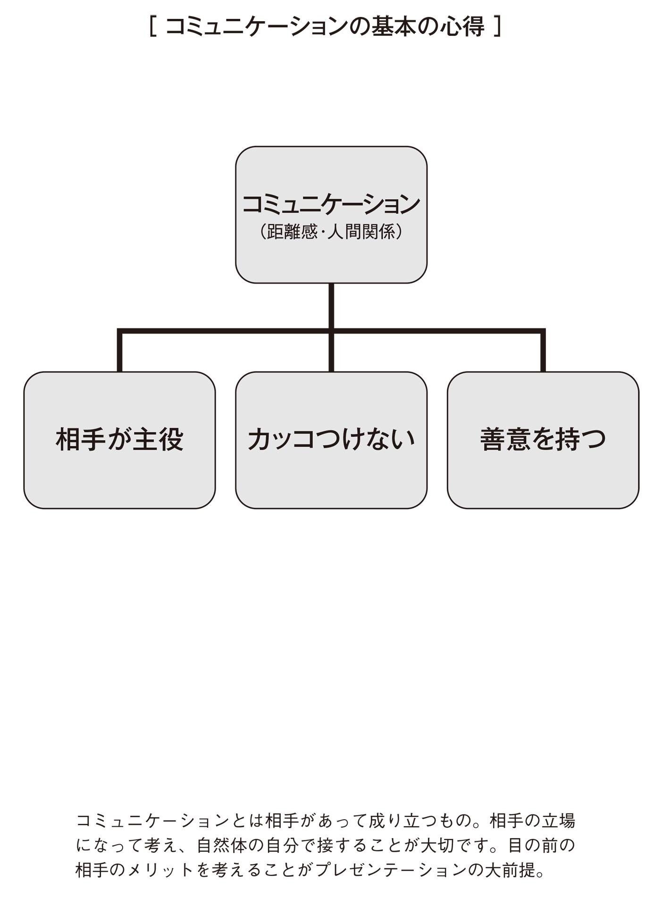
一定の距離感ばかりでは退屈なだけ
プレゼン中、手元にある資料を必死に読み上げた経験はありませんか？
もちろんよどみなく、ハキハキと話したほうが仕事がデキる印象になります。しかし、プレゼンは何度もいうようにコミュニケーションです。言葉の選び方や話し方のようなトークテクニックのうまさがすべてではありません。
やはり、素直で率直、熱意があるほうが魅力的。その魅力を相手に伝えられるかどうかは距離のとり方次第といえます。
もしあなたが手元にある資料を読み始めてしまうと、相手は内容を頭では把握していても、心の中までは話が伝わりません。それはなぜかというと、読み手と聞き手という一方的な構図ができ上がり、意思の共有ができないためです。黙って聞かされるほどつまらないことはありません。時折、全体に向かって話しかけていると思ったら、急に誰かひとりに呼びかける。ぼんやり聞いていた人はハッとすることでしょう。逆質問を投げかけるのもスキルのひとつですし、その一投が互いに質問し合う環境づくりのきっかけになります。自然と笑いが起こる雰囲気になります。
兼子が23 才のとき。当時、１章で書いた通り寝具を販売する会社で、30 人いる部下をまとめられなくて悩んでいたことがありました。30 人を10 人ずつの３チームに分けてしまえば、話したいことがスムーズに伝わるのに、30 人まとめてだとそれができない。それを打破するヒントとなったのが〝笑い〟というエッセンスです。うまく部下をまとめている上司を観察してみると、みな笑いを交えて話していました。笑いが起こると不思議と一体感が生まれ、スタッフの心がオープンになるんです。心がオープンになれば、メッセージもダイレクトに届きます。 足りなかったのはコレだったのかと悟りました。また、当時はパーティーの司会など大勢の前で話す機会が増えたこともあって、だんだんと相手が10 人以上の場合と少人数の場合の距離感の違いがつかめてきたんです。簡単にいえば、大人数の場合は相手が聞いていようがいまいが空間に向かって話す感覚。 それまではひとりひとりに理解してもらおうとする距離感のままだったから、全員に伝わりきらなかったんです。なんとも簡単なことだったんです。さらに、そこに笑いが加われば最強です。
多くの人は人前に出たら人前用の距離感をキープしようとしますが、その場に合わせて距離感は変化するので、必ずしもいつも同じとは限りません。
就職の面接で、面接官が３～４人しかいないのに、20 人に対するように話してしまい失敗する。就活本に書かれている「面接では大きな声でハキハキ話す」を鵜 呑 みにして、その場の雰囲気を無視した結果です。コミュニケーション能力が低いといわれるのは、そういった決まりきった距離感を信じて、かたくなに守っている人に多いようです。コミュニケーションは距離感というものさしではかっていいということを知ってほしい。そのものさしはあなたが今まで培ってきた感覚なので、マニュアル本なんかに振り回されたらダメ。
本来ならば、ここまで書いてきたことは本能的に人はわかっているはず。
人は誰でもテリトリーを持っています。それはパーソナル・スペースと呼ばれる物理的な距離だけでなく、コミュニケーションにおいても同じこと。たとえば、初対面の人には敬語で話しますし、静かな場所では声をひそめる......など、親密度や環境によって口調や話す内容をかえることを生きていく中で学んできているはずです。つまり、距離感とはコミュニケーションそのものといえるのではないでしょうか。
続いては、コミュニケーションをとる上で覚えておくべき３大前提についてお話しします。
「相手が主役である」「カッコつけない」「善意を持つ」
この３つをおさえておくとコミュニケーションの質がワンランク上がります。その上で再度、この章を読み返し「コミュニケーションとは距離感のこと」であると頭にたたき込みましょう。たとえ話として思い出してほしいのは、兼子が得意なテレビ通販です。視聴者が見えない、距離感がとれないはずのテレビカメラに向かって兼子はどのように距離感を、コミュニケーションをとっているのでしょうか？ テレビを見ていると画面はズームしていますよね。アップにしたり、引いたり。映像のズームの感覚、そして声の大小、そこにボディランゲージが加わって視聴者との距離感をコントロールしていることに、みなさん気づいているでしょうか？
「相手が主役」と思えば、人見知りは解消される
１章でも書きましたが、僕が仕事の上でした一番最初の失敗は人見知りです。
振り返ってみると人見知りが激しいことで、損したことがたくさんありました。人見知りの人って、ビジネス上は「あの人に声をかけたほうがいいんだろうな」と頭でわかっていても、「ま、別にいいか」と流してしまう。もしかすると何かチャンスにつながる出会いがあったかもしれませんよね。今となっては、人見知りすることに意味がないし、それは勝手な自我だったなと反省しています。自分が人見知りなのは性格の問題だと思っている人は、それはただの自分勝手だということに気づいてほしい 。つまらないヤツだと思われるのが怖い、自分に自信がないから......といって相手を避けるのは、結局自分が傷つきたくなくて自分を守っている状態。自分が相手より上、つまり主役になっているんです。
相手が主役で、相手の立場に立って考えるという精神は社会人のコミュニケーションにおいても欠かせません。特に男性は、自分が主役だと思ってしゃべりまくっちゃう人が非常に多い。相手がまだ話しているのにかぶせる人って多いですよね。それはまだ自分が満たされることに幸せを感じている、すごく低いレベルにいるからなんです。
兼子が人見知りを克服したきっかけは、相手のことを考えて、相手をよくしてあげたい、そういった善意の気持ちを持てるようになってからだと思います。善意については後ほど説明しますが、善意の気持ちを持つと心が本当に強くなります。これは兼子自身の体験談です。相手が喜ぶことを先に考えて行動しているのだから、自分の心に迷いや不安が生まれないのは当然です。何をいわれたとしても私欲で行動しているわけじゃないから、勇気を持ってブレずに貫けます。
たとえばセミナー的な大人数がいる会議の場。そこは完全アウェイ。少しでもあなたに対してのネガティブな視線やセリフが吐かれたら、きっと心が折れそうになるでしょう。そんなときにあなたを支えてくれるのがこの「善意」なのです。会場の人に対して、公的動機による「愛情＝善意」さえあれば、あなたは思っていることをしっかり相手に伝えることができるはずです。
また、人のため、社会のためという目的があるとき、誰もあなたを否定できません。誰にも否定されないから人見知りの怖さもなくなるんです。
人見知りを解消したいなら自己満足という狭い世界を抜け出すことが近道です。
カッコつけなければ緊張しない法則は？
人間は大人数の前だと、つい大きなことを口走って、カッコつけたがるものなんです。みなさんが悩む「人前で緊張する」、これは自分をよく見せようとする気持ちや今まで以上の自分を出そうとムリをすることから緊張状態に陥っているだけなのです。
緊張しない法則はごく簡単です。いつも以上の自分は出せないと知ること。
ただ、「ありのままでいいよ」と伝えると、プレゼン前になんの準備もしないバカがたまにいます。本番前までの準備や努力は精いっぱいするべきです。それ以上のことを本番でやってのけようとしないことが重要なんです。ありのままでいいけれど、相手のことを考えれば準備もしないでプレゼンに臨むのは失礼にあたります。何度もいいますが、プレゼンや自己紹介は相手のためにするもの。「ありのまま」の意味をはき違えると本当に痛い目にあいます。
よく、２～３人相手ならスラスラと話せる人が、10 人を目の前にするととたんに話せなくなることがあります。大人数の前だと緊張してしまう人は、人数や場所を問わず、まず同じ話をするクセをつけてください。 たとえば、友人との飲み会の席でもＯＫ。友達数人を前に仕事の話をしてみましょう。そこで議論をして、新しい知恵をつかむ。それをまた会社で大人数の前で話して、また知恵をつかむ。プレゼンの内容がどんどん洗練されていきます。さらに、その話を話すこと自体に自分自身が慣れていきますから、いざ本番で緊張することもなくなるのです。
これも何度も書きますが、兼子は極度の人見知りで、緊張しいでした。シャイとも表現できるかもしれません。実は暴走族出身のヤツらなんてみんなシャイなんです。「緊張」というのも「うまくしゃべれないかも」というのも、すべてあなたの内面の問題であって、相手にはまるで関係ないことです。極端にいえば、あなたの緊張に相手は気づいていないかもしれません。つまりあなた自身が勝手に緊張をして、勝手に頭が白くなっている。緊張しているマッサージ師の人がいるとして、強く押されたりしたらなんだかこっちが緊張しますよね。そんな緊張感は同時に相手に伝わるもの。それはあなたの自分勝手さがそのまま相手に伝わってしまっているということ。自分をさらけ出す、ウソはつかない、あなたのままを見せる。そのときに、はじめてあなたのいいたいことはきっと誠実に相手に伝わっていくはずです。
愛情は身内だけではなく他人へも向けるもの
基本的に人間の幸せは何かというと、成長する→愛情を知る→成長させる の３つだと兼子は思います。ステージが上がっていくほど、人を喜ばせることにおもしろさを感じられるようになります。先ほどお話しした善意は、まさに愛情を知り、成長させるという段階に到達したときにはじめて生まれるものです。
ひとつずつ説明すると、「成長する」というのは自分自身が成長すること、つまり自己満足のレベルです。できなかったことができるようになる、仕事の量が増えてくる、責任ある仕事を担当するようになる......。もちろん自分が成長しなくては何も始まりませんから、重要なことですがそれだけでは自分さえよければそれでいいという状態をさします。自分がほめられたくて、認められたくて何かに取り組んでいる段階です。この段階を経て、やっと自分だけでなく人を愛することができるのです。
２番目の「愛情を知る」は、他者に見返りを求めず、純粋にこの人をよくしてあげたいと思うこと。兼子も経験があるのですが、まったくマジメにストレッチをやってくれなかったお客さまが少しずつ取り組むようになり、やせ始めたときは情がぶわっとわきました。女性のお客さまがやせて、ミニスカートをはきこなすようになったときは涙が出そうになります。愛情というと、だいたい親兄弟や子どもなどの身内、または彼女や彼氏など好きな人に限定して向かいがちです。しかしここでいう愛情とは他者に向けるもの。他人に対して愛情を持てたときに愛情を知ることができるのです。
最後の「成長させる」とは、身内以外の愛している人間をレベルアップさせること。このうれしい手ごたえこそがコミュニケーションの醍醐味といえます。身内や結婚相手に愛情を抱くのは誰でもできること。そうではなく、まったくの他人をかわいいと思い、成長させてあげたいと思うのが真の愛。人間愛ということです 。残念なことに、たいていの人は自分を成長させるだけで留まってしまう人が多いのも事実です。
ここでひとつアドバイスです。ビジネスではときにシビアなシーンに見舞われることも多い。そんなとき「この人を信じていいか？」の見極めは、相手が人を成長させることにおもしろさを感じているかどうかで判断できます。わかりやすくいえば、その人が損得をとるか、道理をとるか。お金や名誉など自分の利益を求めてがんばる人間は要注意。反対に、人との信頼関係や熱い思いを追い求める人こそ信頼に値します。
僕が尊敬していた上司はやっぱり道理をとる人でした。彼は直接の利益にならないことでも全部がんばっていました。利益にならないからがんばらないとかせず、全部にエネルギーを注ぐ。なんの得もないのに、とにかく面倒見がいいし、熱い思いでぶつかってくれました。つき合いがなくなった今でも、その教えは一生僕の中に生き続けます。
私欲だけでは人間の心は満たされない
世のため、人のためが善意とすれば、反対にあるものは私欲です。私欲を持つのが悪いことではありません。ただ、自分のためにお金や地位や名誉ばかり求めてしまうと、いつまでたっても充実感や満足は得られません。
アメリカの研究ですが、年収６００万円までは年収が上がるごとに満足度が比例しているんです。しかし６００万円を超えると、年収が上がっていくにつれ満足度が下がっていくという結果があります。これは年収＝満足ではないというあらわれ。経済的な豊かさがありすぎると、精神的な豊かさが見えなくなってしまいます。「善意を持って仕事をする」ということは年収でははかれない価値なんです。
小さい頃、テレビアニメを見て誰もが正義のヒーローに憧れたと思います。心の奥底には、自分も世の中に貢献したい気持ち、正義に憧れている気持ちがあることを知るべきです。今からオリンピック選手になり金メダルをとって日本のためにがんばるのは難しいけれど、今いる場所で善意を持ち、そして善意を持てるようなサービス、商品を開発することはできるはずです。
そのためにも、もっと世の中へ目を向けなければいけません。
もっと会社をよくするためには？
もっと社会をよくするためには？
もっと日本をよくするためには？
このように身近なところから徐々に規模を広げて自問自答しましょう。突きつめていくと〝公的動機〟という武器を手に入れることができます。
なんのために人は働いているのか？ そもそも自分のためだけでなく相手のため。
人間は相手のためという動機がない限り全力を出せない生き物です。
誰かのためでしかアクセル全開状態にはなれません。これ、覚えておいて損はないです。本質的に人は自分の年収のために、名誉のために、肩書きのために全力は出せないのです。もし「お金のために、稼ぐために全力でやってるよ」という人がいたら、あなたの思っているそれは本当の１００％ではないのです。最後の最後、人は誰かのために生きたいという本能があるのです。この本に頻繁に、洗脳するように登場する「公的な動機」という言葉は、なぜ働いているのか？と疑問を持っている人に対しては明確な答えになるはずです。あなたが働く動機（モチベーション）をしっかり内面を見つめながら一度考えてみてください。
聞き慣れない言葉かと思いますので、次から始まる「法則３」で詳しくお話しします。
Rule
法則３......「公的動機」という武器
「公的動機」とは何？
社会のため、人のために目的を持つこと
人間は公的なものに対して否定や非難をしない
公的動機は人生をアクセル全開にするための必須の要素
公的動機とは「社会に対して何かを還元しよう」という意志のことです。何も自我を捨てる必要はありません。人生においては公的６：私的４のバランスがちょうどいいかと兼子自身は思います。公的な部分だけで生きていくのは難しいですから。自我をいかにコントロールするかがカギになります。自分をコントロールできていない人が仮にお金をもうけても、脱税に走ったり、軽犯罪を犯してしまうものです。それは自分の幸せやステータスがどこにあるかがわかっていないからです。私欲を優先しているとどこまで稼げばいいのかゴールが見えなくなります。経済的な目で見える部分では豊かに見えるかもしれないけど、心が貧しい。心が貧しいからお金で埋めようとする。でも埋まらない。その負のスパイラルから抜け出すためには公的動機を見つけること。ゴールが見つかると、人は体も脳も心も全力をつくせる。つまりアクセル全開になれるんです。
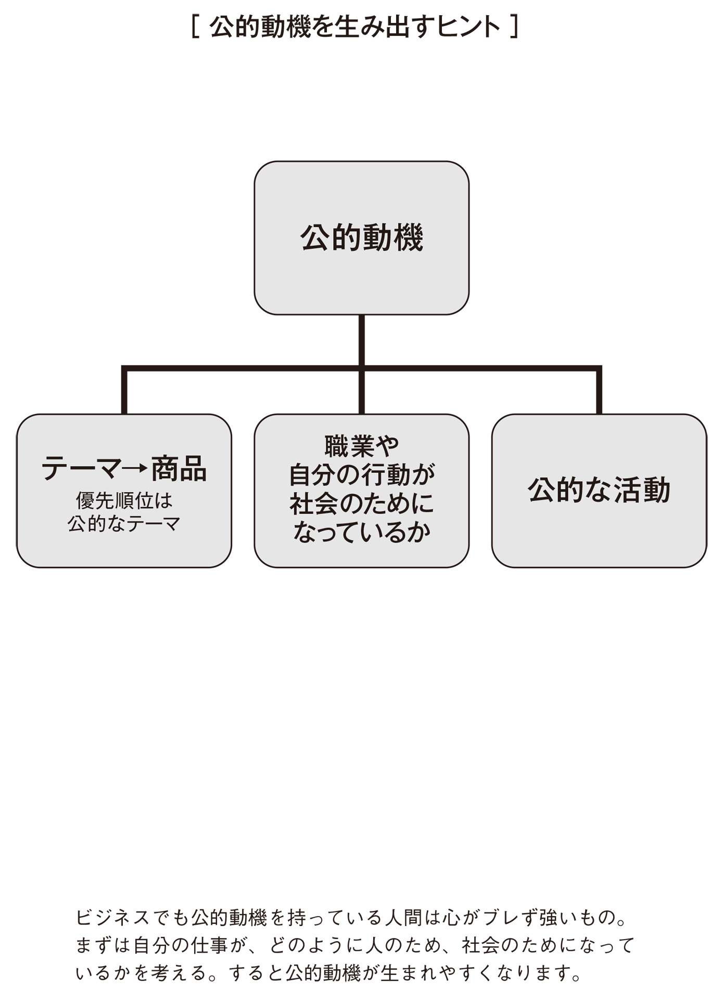
仕事がうまくいかないのも公的動機がないから
「あなたが社会に出て働く目的はなんですか？」と問いかけると、だいたいの人の頭の中には給料しかない。お金のために生きている。他にあったとしても、せいぜい車や海外旅行、安定のためだったりします。それでは仕事の質が上がるわけがない。だって本心は私利私欲まみれなんですから（笑）。
人は自分のためには全力をつくせないし、能力を発揮できないようにできています。アクセル全開になれないようにできているのです。当然、自分のためだけに働いている人は仕事もうまくいきません。もし公的動機がない状況で、あなたがある商品を営業しなければならないとき、成績を上げるために売りたい気持ちで頭がいっぱいになると思います。残念なことに、売りたい商品があると先行し、思いながら営業マニュアルをつくった人はその時点で勝ち目はありません。
売りたい気持ちを隠していますから、そこに小さなウソがある。ウソをついた瞬間に人の心は弱くなります。プライベートで彼女にウソをつくくらいならいいですよ（笑）。
金持ち全員が真の成功者とは限らない
注意してほしいのは、お金を持っていて一見成功者に見える人が全員公的動機を持っているとは限らないということです。ポルシェやフェラーリなど高級外車ばかりを７台所有しているという人もいるじゃないですか。僕は「なんのために所有してるんですか？」と聞きたいです。だって７台持っている意味がない。そんなお金があるなら、被災地に援助をしたり、社会へ貢献するべきだと思うんです。お金を求め始めたら無限に欲しくなります。追い求めてもゴールはありませんから、求めるだけムダ。
かつては兼子も金もうけのためだけに働いている時期がありました。その意識が変わったのはキックボクシングに出会ってからです。始めた当時は、会社の人間に金にもならないことをするんであれば、仕事で実績を上げろといわれました。でも僕は月収が半分になったとしてもキックボクシングを続けて、体力がある状態で生きていく道を選んだ。収入が倍になったからといって、太ったまま、体力がないままで生きる人生はカッコよくない。豊かさは金だけじゃないと気づけた。それが28 才でした。
売りたいなら商品のよさより〝必要性〟を説け
公的動機とは、社会に対して何か還元しようという意志 であると説明してきました。これがあると人は強くなれるんです。僕がテレビ通販で成果を上げているのは、そこに社会に還元したいという公的なテーマ を持っているから。公的なものに対して人間は否定も非難もしません。社会をよくしようとする人を非難したら、それこそ自分が悪者になりかねない。誰だって自分が悪になるのはイヤですから。
僕は相手に商品を認識させるときに、「この商品が必要だ 」と訴えます。普通は逆なんです。商品を売るために営業トークをつける。あとづけするのが一般的なんです 。それってすごく下心っぽいし、説明すればするほどいっていることが理屈っぽく、ウソっぽくなってしまう。でも僕の場合は「姿勢教育を義務教育にするためにＳ字の姿勢を広める。それを全国普及するためにはこの商品が必要。だから売るんです！」となります。
日本にはこういうことが足りない、社会にはこういうことが足りないと説明する。説明した上で商品について話す。商品のよさではなく、商品の必要性 を話します。
僕はテレビ通販番組で、お客さまがふれられない商品を売っています。それでも約１万円の商品が４時間で３万５０００個売れるんです。東京ドームを満員にするほどのお客さまが、まだ触ってもいない商品に、お金を出して買ってくれている。それは商品がいいからじゃなくて、心の奥に〝本気で姿勢をよくしようとしてるんだな〟という気持ちが伝わっているから。姿勢をよくしたい、姿勢をよくさせたい。この公的なテーマを商品に共鳴させているわけではなく、お客さまの気持ちに共鳴させている。 これが他の通販とは違うワザです。兼子には追いつけないって思うのです、売り上げを上げたいっていう自分の都合ではないから。商品を使う感じを説明するより、説得力があって、相手の心を動かすことができます。公的動機があれば熱心さや姿勢、いつも同じことをいっているという一貫性が備わります。
公的なテーマがあれば目標に突き進める
公的なテーマがあれば仕事がうまくいくというのは伝わったと思います。次の問題は、じゃあどうやってテーマを見つければいいのか？ではないでしょうか。
先ほど説明したように、公的動機がある先に商品やサービスがある。この順序は絶対です。まずは自分の職業が社会にどうつながるのかを本気で考えてください。
「なんのためにこの商品があるのか、なんのためのサービスなのか」
誰がどのように喜ぶのかを掘り下げて考えて、分析するべきです。なんのための商品やサービスかがわかると自分の気持ちが変わります。あとは目的＝ゴールに向かうだけですから。目的がなくて仕事をしている状態は、目的地（ゴール）が決まっていないドライブのようなもの。そりゃフワフワしますよ。
本来なら、学生時代に公的動機をつくって、意識を高めるべきなんです。そこを踏まえて就職活動をすれば、仕事とのミスマッチも減るのではないでしょうか。若い人が会社を辞めずに働き続ければ、結果として自分のため、社会のためにもなります。
公的な活動は自分を見せる「体験談」につながっていく
たとえば１年前の僕は、女子大で講師をしたり、路上で署名活動をまだ呼びかけたりしていなかったんです。今ではその２つの活動をし、それが体験談となり、自分を見せる作業やプレゼンの中で語ることができるようになりました。
公的な活動をしていくと体験談になるんです。自分の衣となってどんどん身についていきます。公的な活動をしたことでまた別の場で体験談として話すことができる。体験談というプレゼンの衣が増えていく。すると当然、実績ですから自信にもつながっていくんです。結果として「武器」を増やす作業になっているんです。
社会のため、人のための活動なので、自分の心もブレません。自分が思ったような業績が上げられなくても、心が折れることがないんです。逆にうまくいっているときでも、うまくいっていないときと同じテンションで活動ができる。これ、人のマネをしてのっかってきた人にはできないことです。
僕の仕事を見て、「もうかりそうだ」「今、流行っているから」と便乗してきたヤツはうまくいかなくなったときに、踏んばれないし、息切れしちゃうんです。そこには私欲しかないから、もうからないとやめちゃう。
実際にいましたよ。調子がいいときはブログなんかも毎日のようにアップしていたのに、もうからなくなってきたらブログの更新がピタッと止まった同業者。本来ならブログも公的なものなので、毎日発信するべきだと僕は考えています。「毎日書いていて、大変じゃないですか」「書くネタがよくありますね」とよくいわれます。しかし、まったく大変ではありません。なぜなら、ブログを書く動機自体がそもそも公的なものだからです。自分の趣味や欲求のためだったら続いていないですよ。ブログは全国各地の人の情報源だ！という志がありますから、自然と書くパワーがわいてくるのです。
若い人の中には「モチベーションが上がらない」と悩んでいる人が多いと聞きます。それも同様で、そこに公的動機がないからなんです。「自分はなんのために働いているのか」「働くことで社会にどう貢献できるのか」、そこは必死に考えるべきだし、スマホいじってるヒマがあるのなら、まわりの人と語り合うべきですよね？
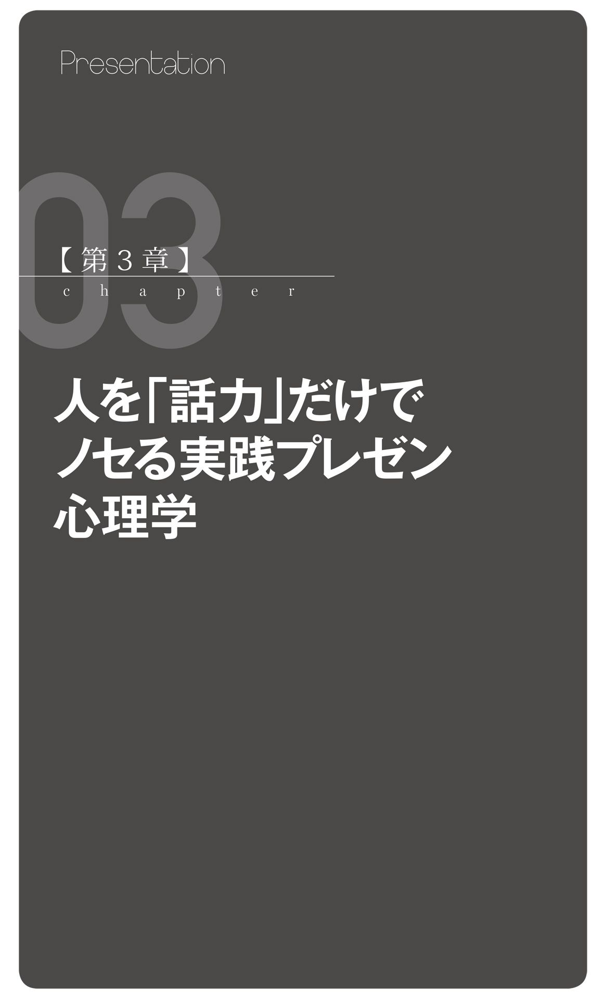
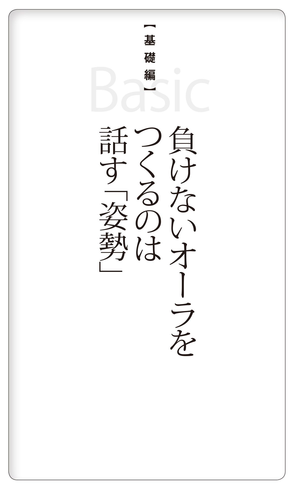
本番前のスタンバイからギアを上げていく
３章ではプレゼンの直前でも役立つ具体的なテクニックを紹介していきたいと思います。基礎編とはプレゼンに臨む前のスタンバイの作業です。
資料に目を通したり、段どりで頭がいっぱいで本番前にそんなことをしている余裕がない！なんて声が上がりそうですが、勝負は会議室に入る前から始まっています。準備ができていれば、ムダな緊張もしないはず。話す＝プレゼンテーションで負けないオーラをつくるのは、準備も含めた話す姿勢なのです。
基礎編でお話しするのは、発声練習や呼吸の仕方、プレゼンの構成の考え方など本番前にやっておくべきプロセスが中心となります。なぜわざわざスタンバイの仕方までお話しするかというと、実は本番と同じくらい重要な作業だからです。
第一印象で〝つかみはＯＫ〟状態になるには準備が必要です。では、実際に兼子が本番前にやっている基本をイメージしやすいように時系列で紹介します。
難しいことはひとつもありませんので、ぜひとり入れてみてください。
ランニングが体のポテンシャルを高める
「よりよいプレゼンをするために何をするべきか？」と聞かれたら、真っ先にランニングと答えます。ただ注意してほしいのは、僕のいうランニングとはマラソン競技のような走り方ではなく、あくまでフィットネスの一環です。マラソンはスポーツですのでランニングとは違います。
ランニングをおすすめする理由は次の通りです。
①姿勢がよくなる、②血流がよくなり体温が上がる、③呼吸が深くなる。
普段は使っていない体の深部の筋肉が刺激され、全身ストレッチにつながります。ランニングは趣味でやるスポーツだと思われがちですが、それは間違い。女性でいうならトリートメント、フェイスパック、ランニング。女性の場合は、ネイルを塗ったり、化粧水をつけたり、美に対して毎日トータルで１時間以上の時間を費やす。いわゆる自分磨きです。ランニングも毎日やっていることと同じジャンルでとらえてほしい。僕は男だからネイルを塗ったり、化粧水をつけたりはしませんが、その分の時間を朝のランニングにあてていると思ってください。ランニングは体の内側のトリートメントだと考えてほしい。よく「毎朝走るなんてアスリートみたいですごいですね！」といわれますが、それこそ間違えた認識です。だってみなさん、毎日歯磨きしますよね？ シャワーを浴びますよね？ 朝食を食べますよね？ それと同じことと感じてもらいたい。
ランニングやウォーキングをとり入れるだけで、あなたの体は確実に変わっていきます。プレゼンで話す姿勢に必要な筋力、呼吸の仕方が身につき、結果的にはプレゼンの質が変わります。僕自身も本番の前にはウォーキングやランニングをして、全身の血流をよくすることから始めます。プレゼンはスポーツといっても過言ではありませんから準備運動が必要なんです。どんなアスリートだって、なんの準備もせずいきなり試合はしないでしょ。プレゼンで高いパフォーマンスを出したいならば、まずランニングです。
プレゼンはスポーツ。強い体が強いしゃべりを生み出す
声が通るほどプレゼンの説得力も増していく
僕がプレゼンで誰にも負けない理由のひとつに、声が強いことがあります。ここでいう強さとはボリュームの大きさではなく、腹の底から声が出ていること。つまり通る声です。通る声を出すため、本番前にウォーキングやランニングをして呼吸筋肉に刺激を与えます。次に腹式呼吸で長く深い呼吸を繰り返します。完全に吐ききって、完全に吸いきるのがポイントです。正しい腹式呼吸をすると、鼻から吸い込んだときはおなかがふくらみます。口から吐ききるときはおなかがへこみます。間違えて胸だけで浅い呼吸をしているとおなかは動かないので、おなかの上に手をおいてチェックしてください。
そして発声に欠かせないのが〝リップロール〟と呼ばれるトレーニングです。リップロールとは、プロの歌手や舞台俳優なども訓練として採用しています。
方法は、唇を閉じた状態にして、唇の力を抜きます。その状態で息を吹き、唇をブルブルブルと振動させます。息を吐ききるまで長く振動させられるよう練習するのがポイント。慣れてきたら、「うーーー」など声を出したり、音程をかえるなどさまざまなバリエーションでやるのをおすすめします。すごく簡単なように思えますが息の量を一定に調節して吐き続ける必要があるので、正しい腹式呼吸ができないと難しいです。
次に僕が実践しているのはハミングです。ハミングとは鼻歌のこと。口を閉じて、鼻に息を通して発声します。口を閉じたまま「もーーーー」や「んーーーー」と鼻を通して発声するだけです。ハミングをすると声帯が振動し、のどの緊張がほぐれていきます。この状態のまま好きな歌を歌ってもいいと思います。音程をかえながらのハミングは声のウォーミングアップをしながら、気持ちをリラックスさせる効果がありますから。
プレゼン前に行うことで、なめらかに発声することができ、無理に声を出してのどを傷つけることを防いでくれます。
通る声＝聞きとりやすく、また迫力のある声はこうした準備が欠かせないのです。
直前にリップロール。腹式呼吸で迫力のある声を出して圧倒する
台本を捨てた先の言葉 が人の心を動かす
プレゼンに台本は必要ありません。しいていえばフレームだけつくれば十分。あまりに細かくつくり込んでしまうと、本番ではその台本を読む作業になってしまうからです。たとえスラスラとよどみなく進行したとしても、読むだけでは熱意や率直さは伝わりません。プレゼンにはやはりライブ感が必要。テレビでいうなら生放送のリアルと緊張感。台本ではない、そこに意志、魂が込められているのが何よりも重要なんです。台本をつくり込みたい人は自分の人間性に自信がないケースがすごく多いです。それに加えて、「否定されたらイヤだ」「落とされたらイヤだ」という気持ちから保険をかけるという発想があります。考えてみてください、その保険的発想こそ自分本位だと思いませんか。その企業、あるいは社会に対して自分はがんばりますという気持ちがあれば、台本なんて必要ないじゃないですか。その気持ちを伝えればいいんですから。好きな女性がいて、愛の告白をするのに台本をつくるバカはいません。そんなつくられた告白に心が動く女性もいない。プレゼンも同様です。台本をつくることは、なんのためにプレゼンをするのか心が定まっていないゆえの行動なんです。
かといって何も決めないままプレゼンに臨むわけではありません。僕も、どんな順番で何を話すのが効果的かを考えフレーム＝枠をつくります。フレームをつくるとき、何をしゃべるかというテーマによりますが、まずは「相手が聞きたいであろう内容」「求めているニーズ」、そこから考えます。次に、伝えるべき順序です。教えるときに順序を間違えると相手はわけがわからなくなる。指導力って順序力でもあるんです。雑なコーチって、最初にたくさん教えようとするんですよ。でも指導力の高いコーチはテーマはひとつしかいわない。根本の幹はひとつで枝葉を広げているだけ。これも伝えるときに、相手が主役なのか、自分が主役なのかという心理状態が見えます。
うちに来ているお客さまには、どんな人でも30 ㎞を走れるくらいの体をつくってあげたいという思いを持って、スタッフ一同ストレッチを教えます。これが僕たち教える側のゴールなんです。でも、そのことをお客さまに全部伝えてしまうと意味がわからなくなる。いきなり30 ㎞なんていわれても戸惑うし、そもそも無理！と混乱させてしまいます。
この仕事を始めたとき、店のリピート率は40 ％でした。リピート率とは１回目に来ていただいたお客さまが２回目に来店する割合を示した数字です。それが渋谷に店舗ができて、僕ひとりでやっていたとき、会社全体では40 ％のリピート率でしたが、渋谷店だけは94 ％になったんです。それはきっと僕の教え方がすごくシンプルだったから。
１回目にお客さまの心に何をとめさせるかというと、「ストレッチで体がラクになるという効果」＆「週に１回だけ来てください」。それだけなんです。アレやれ、コレやれとなると誰だって頭がパンクします。ただひとつ、「週に１回来てくれるだけで、確実に体のレベルが上がっていきます」と。このテーマひとつだけを伝えてリピート率が94 ％に引き上がりました。
これはプレゼンでも同じこと。ぶっちゃけ、30 分間のプレゼンではテーマはひとつ、１時間でテーマは２つが限界なんです。大抵の人はそれを理解していないから、短い時間にいくつもテーマを盛り込んで話してしまいますが、結局それ伝わってないよ、っていう話です。
トレーニングとしておすすめなのは、ひとつのことをテーマに１時間話し続けるというもの。自分のそばに転がっているペンでもいいし、飲みかけのペットボトルについてでもいいです。これはあなたに必要なものです、社会にも役に立つものです、としゃべり続けてください。商品やサービスに意味も持たせてあげなければ人は動きません。逆をいえば、そこにきちんと深い意味があれば動いてくれるものなんです。
なんでも大切なのは幹と枝葉の関係です。ペットボトルについてしゃべるときも、何が幹（公的動機）なのか理解して話してみることです。
すぐにはうまくしゃべれるヤツなんていないと思いますが、そのトレーニングをすることで公的動機の見つけ方も上達するはずです。公的づけるクセを身につければ、どんなサービスや商品をプレゼンすることになっても怖いものナシになります。
30 分程度の時間で人に伝えられることは「ひとつ」だけ
自分のエゴでプレゼンを構成するのは間違い！
人って、本来は自分本位な生き物ですから、ビジネスでも自分が主役で、売り手側の心理で仕事をしている人がけっこう多いんです。
「この話をしたほうが会社がよく見えるだろう」「オレはこの話が得意だから話そう」とか、自分の都合でいろんなものを決めてしまいがち。実はこれがどうしても、もう一歩上のステージに上がれない原因でもあります。相手のためといいながら、結局は自分のためになっていますから。そんなニーズのカン違いは、相手の立場にどれだけ本気でなれるかどうかであっという間に解消されます。
先ほどのエピソードにも重なりますが、はじめて入った店がいい店かどうかは店のクオリティや内容の密度とは比例しません。
〝ストレッチ店にはじめて入った〟その時点で、すでにお客さまの頭の中は不安や新しい情報でいっぱいなわけです。「ここは大丈夫なのか？」「あ、テレビで見たことある人がいるなぁ～」とかいろいろ考えちゃっているんです。自分に置きかえればわかると思いますが、はじめての場所はソワソワします。そんな不安な状態のときに、こちら側の思惑のためにあれこれいきなりストレッチして、いろいろつめ込まれて教えられても結局頭に入らないし、落ち着かない。いくら内容がよくても、人の意識にはマイナスの印象が植えつけられてしまいます。いきなり情報量が多すぎるのは相手のためになっていません。よかれと思ってやっていることかもしれないけど、それは本気で人の立場に立っていないと思いませんか？
また、プレゼンはコミュニケーションですから、相手によって話す内容や話す順序、距離感が変わるのは当然のこと。フレキシブルな対応が求められるからこそ、プレゼンを成功させたいならば、相手の立場に本気で立つことが一番の近道なんです。
プレゼンは生き物！ 相手の立場を想像し、ＴＰＯによって臨機応変に
自分を見せる・コミュニケーション・公的動機の３つを再確認
この基礎編では、プレゼン前にすべきことを中心に紹介してきました。きっと心の準備は万端かと思いますが、念のため２章で説明した〝３つの法則〟があなたのプレゼンにきちんと生かされているかを確認しましょう。
その法則とは、「自分を見せる」「コミュニケーション」「公的動機」の３つ。口をすっぱくしていいますが、この３つをおさえずしてプレゼンの成功はありません。
「自分を見せるため」に、相手のメリットを考えて自己紹介をしていますか？ 体験談や数字を使った具体的な要素は盛り込まれていますか？
次に「コミュニケーション」。今まで以上の自分を見せようと思って無理をしていないでしょうか。相手が主役と考えて、相手を喜ばせる内容になっていますか？
最後に「公的動機」。あなたのプレゼンは相手をはじめ、社会の役に立つと胸を張れますか？ 「商品を売りたいから」「案件を通したいから」と理由をあとづけしていませんか？ プレゼンで話そうとすることにウソがあると心が弱くなりますよ。
毎回、プレゼンするたびに、事前に必ずしてほしいのがこのチェック。３つのチェック項目を最低限クリアしているか確認していきましょう。
以上のことを確信を持ってクリアしているプレゼン内容ならば、失敗を恐れる気持ちや緊張は不思議と感じなくなるはずです。プレゼンの本質はここにあります。小手先のテクニックではごまかせませんから。自分が自信を持って臨めるテーマであることを確認し、いざ本番へ！
自信を持って臨めるテーマと確信すれば本番は怖くない
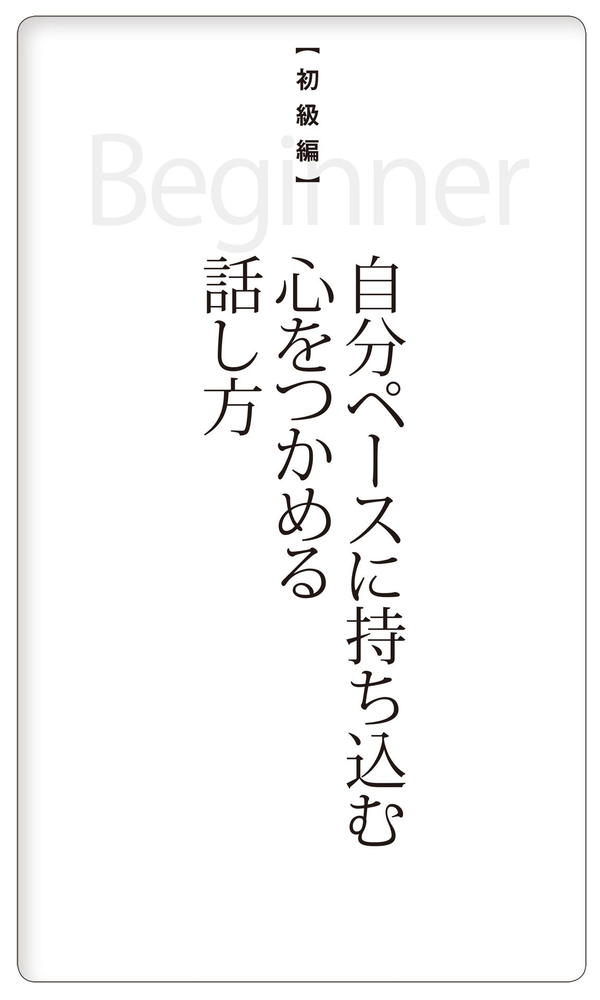
状況にふさわしい話し方をマスターしよう
立って話すのか、座って話すのか？
大勢いる中で誰に向かって話すのか？
プレゼンの環境は相手も人数も、その内容も似たものがあるとはいえ、どれひとつとして同じものはありません。ときには「まったく興味がなさそうな上司」「初対面の取引先」など、厳しい状況の中でやらなければいけないこともあります。だからといって、相手が悪かった、タイミングが悪かったなんていいわけは社会人として通用しません。そこで、この初級編ではどんな状況でも使える、おさえておくべき話し方の最善の方法を紹介します。話し方で足を引っぱられるなんて悔しいでしょ？ 少なくとも話し方でプレゼンの失敗を招かないための基本を学んでください。
たかが話し方、されど話し方。ベースをしっかり固めましょう。
立つ、座るの距離感や判断は考えるまでもなく身についている
あなたがそれぞれのシーンで自己紹介すると想像してみてください。
まずは、喫茶店。ちょっとした打ち合わせで相手と向かい合って座っているとき。
次に会議室。たとえば９人のスタッフに自己紹介するときはどうでしょうか？
前者ではあなたは座ったまま、後者ではイスから立ち上がって自己紹介を始めるのではないでしょうか。しかも頭で判断せずに、ごく自然に。
では、あなたが自己紹介される側にいるときのことを想像してください。２人きりの打ち合わせで、目の前で向かい合っていた相手がいきなり立ち上がって挨拶をしてきたらビックリします。それに「コイツ空気読めない？」なんてマイナス印象を持ちかねません。このように話す相手の人数によって立つか座るかの判断、つまり距離のとり方は普通に生活してきたならば、すでに身についています。
距離感をはかる目安は話す相手の人数です。立つか座るかの境界線は10 人。５～10 人の場合は微妙なラインだと思いますが、それは人間関係によって判断を。初対面の人ばかりなら６人だとしても立って話したほうがいい場合もあります。
立つか座るか。些細な違いに思われるかもしれませんが、決定的な違いがあることをお忘れなく。
それは声のトーンでも同じこと。１対１の会話と、１対20 のプレゼンではトーンが変わります。変えようと思って変わっているわけではなく、話し方のスイッチが自然と切りかわるんです。また、10 人以上いる場で話をするとき、どこを見ればいいかわからなくなる人も多いみたいですが、その場合はきちんと話を聞いてくれる人に、まず目線を合わせましょう。みんなが資料ばかり見て、下を向いているときはホワイトボードなどを使って目線＝意識をあなたに向けさせるのも手です。
立つときの目安は10 人。ただ親密度や人間関係によって判断を
最初から力いっぱいペースだとうまくいかない
いざ、話し始めるときって、どんなテンションでいけばいいか迷ったり、最初が肝心！ 第一声が重要！と力んでしまう人が多いのではないでしょうか。
解決法は実に簡単です。その概念を捨てればいいだけです。
誰だって最初は、しゃべりに慣れていないからうまくいくわけないんです。僕だって最初はテンション低めから攻めますよ。最初はローにしておくと、そのほうが後半になるにつれハイにシフトしやすいので、盛り上がりも右肩上がりになります。最初からテンション高めでスタートしても、それをキープするのは難易度が高い。しかも、プレゼンでもなんでもそうですが、たいていメインは後半。最初はローでいいんですよ。これは絶対ではなく、確率的にです。
プレゼンはコミュニケーションですから、最初から力みすぎていると、相手も警戒します。ちょっとゆるいくらいがちょうどいいんです。焦ると余裕がなくていきなり本題に入りがちですが、いきなり本題に入るほどつまらないことはない。
たとえるなら、ハンバーグ定食のハンバーグを先に食べちゃうのと同じこと。そのつまらない食べ方なんなの？ってなるでしょ。サラダもごはんもスープもあって、それを繰り返して食べるから楽しいわけじゃないですか。プレゼンもコミュニケーションをとりながら徐々に盛り上げていくもの。いきなり本題に入るのは、車の営業だったら「車買ってくださいよ！」と切り込むのと同じこと。そんなの売れるわけないですよ。
しいていえば最初につかむポイントは、軽い自己紹介と軽い質問から始める。コミュニケーションをとるときのはじめの一歩と同じです。そう思えば簡単です。プレゼンだからといって、自分で勝手にハードルを上げているだけ。
もっと肩の力を抜いて、スタートはローギアでＯＫと気づいてほしいものです。
プレゼンの「入り」は軽い自己紹介と軽い質問でゆっくりと
会場をあたためるコツは自分をもったいつけないこと
僕の場合、「この会場を盛り上げたいな」と思ったら、始まる前から会場に入って人と話をしています。特に、まだ知名度もないときのプレゼンの場合は、あらかじめ会場に入って「はじめまして。今日、お話をさせていただく兼子です」なんてまわりの人に話しかけまくってました。開始前から普通にそのへんをウロウロするんです。「最近どうですか？」と軽く声をかけて、今日プレゼンする内容についてちょこっとネタバレしてもいい。そうやって始まる前に始めちゃうんです。すると「さっき、少しお話ししましたけど？」と前置きができて、本題にスムーズに入れる。お客さんのほうも「あ、さっきの話の続きだな」と興味を持ってくれるので、自然と聞く態勢になります。
会場のスタッフさんに、「先生、会場にいていいんですか!? 」と聞かれることもありますけど、いいんです。だって場をあっためているんですから。反対に、もし僕がゲストとして招かれ、登場をもったいつけたいときは一切姿を見せません。
セミナーなどはひとりで参加している人がほとんどです。しかも開始30 分前に来て、緊張して座っていることが多い。部下にもよくいっていますが、僕たちの仕事はその30 分間お客さんとしゃべっていることだと思っています。お客さんの緊張をほぐしてリラックスさせる。カタチを変えた気配りといえます。ひいてはそれが会場の雰囲気をアウェイからホームに変えるきっかけになります。相手のためと思った行動が自分にも好影響を及ぼします。
重要な会議やプレゼンの場でも、まったく同様なことがいえます。お偉いさんでも、かまわず先に話しかけてみましょう。
10 時にスタートだからといって、10 時きっかりに始めるのではなく、余裕を持って現場に向かうべきです。アウェイかもしれないときほど、早く会場に入って先に自己紹介をするべきです。
会場をあたためるためには、始まる前が勝負！ 先に話しかけてＯＫ
笑いが欲しいときは予想外を狙え！
笑いとは相手との距離を縮める最強のツールです。相手がたとえ仕事上のつき合いであっても、一緒に笑えることで素の部分にふれられ、人間らしさが伝わります。プレゼンの根底は何度も説明した通りコミュニケーションですから、笑いがプレゼンに役立つのは間違いありません。
今でこそ人前で話すことが大好きな僕ですが、かつては人見知りで人前で話すことが苦手だった時期もあります。中でも「笑いをとる」ことができなかった。そこで笑いの勉強のためにダウンタウンの漫才を繰り返し見ました。自分なりに笑いの研究をしてみて、導き出したのは〝笑いとは予想外のところから生まれるもの〟。そして笑いをとるのに、一番簡単なのは自虐ネタです。たとえば、料理研究家の人が自己紹介で「私の特徴は好き嫌いが多いところなんです」というだけでドーンと笑いが起きます。ビジネスシーンでは、自分の職業と違うイメージのことをいうのが簡単で確実かと思います。そう考えれば、笑いをとるのって案外簡単かもしれない......と少しラクになりませんか？
「自分は人からこう思われているんだろうな」というのは簡単に想像がつく。そこを裏切ればいいだけですから。自分の思い切り次第です。
特に自虐ネタは自分のガードをはずして、相手に弱みを見せることにもなります。心の内をのぞかせてくれる相手に警戒はしないし、裏がないとわかれば信用しやすくなります。また、自虐ネタは自分のエピソードを語ることになりますから、自己紹介としても使えるメリットがあります。重要！と書いてきた「体験談」のひとつです。
笑いをとるのに流行のギャグなんて必要ありません。それを使うことでかえって、つまらない人間だと思われますよ。
緊張せず、狙って笑いをとる。一見ハードルが高そうですが、鉄板の自虐ネタを１～２つ用意しておけば意外と難しくないものです。
笑わせるのは難しくない。一番簡単なのは仕事をからめた自虐ネタ
ポジティブ人員に注目して、その他はスルー
誰だって場の雰囲気が盛り上がっているほうが気持ちいいものです。
だからといって、いつも和気あいあいとして、笑いにあふれるようなシーンばかりではありません。そういう雰囲気のとき、人間は下を向いていたり、興味なさそうにしているネガティブ人員が気になってしまって、どうにかその人たちを盛り上げなきゃと気持ちが焦ってしまいます。
実はそれが大きな間違い。盛り上げたいなら、注目すべきはポジティブ人員なんです。
ポジティブ人員とは、目を見て話を聞いてくれたり、あいづちを打ってくれる人のこと。僕は盛り上げたいとき、ポジティブな人に話を振ったり、質問をします。すると、場のボジティブエネルギーが伸びていくのです。
一方的に話すだけじゃなく、笑いがあり、コミュニケーションができる場になります。ネガティブな人がいても気にしません。ポジティブはネガティブを消す力が３倍あるからです。「この人、ネガティブだなぁ」だと思ったらふれないのが正解です。
また、ポジティブな人を伸ばしていくと、ネガティブもポジティブに変わり始めます。
その場にポジティブが３人いるなら、その３人とコミュニケーションをとりましょう。人数は関係ありません。ポジティブな人たちは、ポジティブな意見をいいますから、その意見を僕がまたポジティブに意味づけしてあげる。その結果、現場やムードがよくなる。もし、それでも怒っていたり、ふてくされている人がいたら「怒っているんですか？」と聞いちゃってください。日本人は場の雰囲気を壊すのが嫌いなので、必ず「怒ってないですよ」と返します。その発言で、また場がポジティブに引っくり返ります。
みんなの前で否定できないし、どんどん「オレは怒ってない」と周囲に見せるために自分でそう思い込むようになるのです。たまにそのままムスッとしているヤツもいますよね、「いや別に？」とかスカした態度をとるヤツが。それはサラッとかわしちゃってください。スルーしちゃって問題ありません。
でも、本音をいえばやはり会場がいい雰囲気に包まれるに越したことはありません。その際に有効なのがアイコンタクトです。ひとりの目を見ながらワンフレーズ話す。また別の人の目を見てワンフレーズ話す。このように聞き手のひとりひとりと順番にアイコンタクトをとりながらプレゼンをすすめるといい雰囲気が生まれます。
これは目を合わせて話されると聞き手が話し手に好印象を持つ心理学的な方法なんです。アイコンタクトをとりながら話すと、目を合わせていないときよりも深くうなずいたり、相手に共感しやすくなります。プレゼンでは相手の心に響かせることが第一。そう考えると地道なアクションではありますが、かなり有効な方法なんです。しかも、たったひとりの聞き手の感情移入は周囲へ伝わっていきます。お笑い番組で、笑い声の効果音が入っていることで笑いを誘いやすくなる効果と同じ。人はまわりの人の感情に影響される習性があるのです。
ポジティブ人員だけを見る。ワンフレーズごとにアイコンタクトを
やってはいけない
話し方
プレゼンは一方的に語りかけるものではなく、相手がいてこそ成り立つ会話の拡張版のようなものです。やってはいけない話し方なんていわれると難しく感じるかもしれませんが、安心してください。ただ、普段の会話よりも話し方の特徴が目立ちやすくなる環境ではあります。
あなたも心当たりがあると思いますが、「○○とか」「○○のほう」というような無意味な言葉。これが続くと聞き手の集中力を削ぐことになります。同じように、「あのですね」「それはですね」と言葉の前に添えるクッション言葉をつけると、訴えたい内容が薄まってしまいます。たとえば、プロポーズのときに「大好きだ！ 結婚しよう」というところを、「えーっと、僕はですね、君のこととかが好きでして、結婚のほうをお願いできれば......」といっているようなものです。
そして何より重要なのは、難しい言葉やいい回しを使わないこと。プレゼンのメインはしゃべりですから、耳で聞いてすぐ理解できない言葉を使うのは相手への配慮に欠けています。小学校６年生が聞いて理解できるレベルがベターです。プレゼンテーションの途中では、伝えたい思いが強いほど専門知識や体験談を盛り込みたくなりますが、その熱意があればちゃんと伝わります。つい、知識をアピールしたくて小難しい言葉を使いたくなるかもしれませんが、自己アピールのにおいがしたとたん聞き手は一気に冷めます。「教えてあげている」という上から目線な口調にも気をつけてください。「自分はガイドしているんだ」という感覚で取り組むのがいいですね。
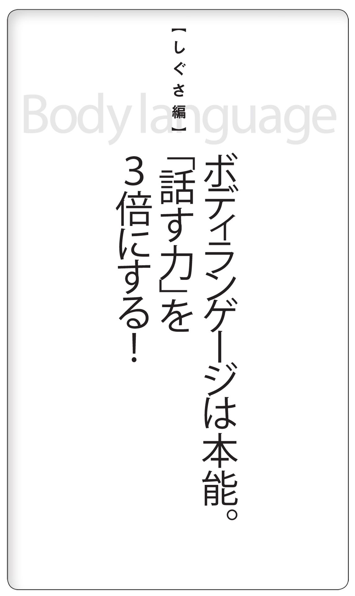
身ぶり、手ぶりで相手の五感を刺激するプレゼンを
ボディランゲージとは身体言語といわれるように、身ぶりや手ぶり、表情など言葉を使わずに相手に意思を伝えるコミュニケーション方法のひとつです。
一説によると、日常のコミュニケーションの55 ％は言葉ではなくボディランゲージで行われているといわれるほど。確かにいわれてみれば、相手に好意を持っているときは自然と笑顔になりますし、目が泳いでいる人がいたらなんとなく信用できないと思いませんか？ 人は自然と相手の体の動きだけで本能的に判断するクセがついています。それは自分を見ている相手も同じこと。ほとんどのボディランゲージは無意識のうちに発信していますが、ここを意識的に変えていくことで話す力を確実にパワーアップしていきましょう。ボディランゲージを有効に使って、本番では言葉＝耳から入る情報だけではなく、手ぶりや表情など目からも情報をとり込ませる。五感を刺激するプレゼンは人の興味を引きますし、鮮烈な印象を残します。
両腕はラクに体のわきにおろすのが基本姿勢
初級編で紹介した、プレゼンでの話し方や会場の雰囲気づくりの次によく質問をいただくのがプレゼン中の姿勢、つまり身ぶり手ぶりについてです。直立不動で、気をつけの状態で話すのも不自然ですし、かといって動き回るのは落ち着きがありません。そこで理想的なジェスチャーについて考えてみました。
あなたもテレビやインターネットで見たことがあると思いますが、アップル社の元ＣＥＯ、スティーブ・ジョブズのプレゼンを思い出してください。手元に資料を持たず、手ぶらでふらっとステージにあらわれます。そしておもむろにポケットから商品をとり出す。まるで誰かからメールが届いたかのように。──そう、すごく自然体なんです。腕組みをしたり、やたらと大きな身ぶりはいっさいナシ。姿勢が聴衆に向かって〝開いている〟というのが正しいのではないでしょうか。
人は気のおけない仲間と話しているとき、その両腕は体のわきにストンとおろしたままで無防備です。リラックスしているから、バリアをはっていない証拠。自分と聞いている相手の間に壁がないことを表現できます。その開いた姿勢こそ理想的なんです。
よく両腕を腰より上の位置に上げるのが正解だと思っている人がいますが、その状態だと堂々として見えるかもしれませんが、相手に威圧感を与えてしまいます。
ジョブズの件もそうですが、スタイルばかりをマニュアルのようにマネた、プレゼンハウツーをやってみてもうまくいかない理由がわかるのではないでしょうか。外国人のような一見カッコよさげなことを日本人がやっているから失敗しているという分析は間違っています。単純にジョブズを見る限り、静かに両手をおろして、相手に対して心を開いている部分を誰もが見逃してしまっているだけなのです。何度もいうようにプレゼンはコミュニケーションです。相手と意思の疎通をはかる上でバリアは邪魔なだけ。自分がリラックスした姿勢を見せることで、相手の心も打ち解けやすくなりますから。
プレゼン中の正しい姿勢とは自然に立つこと
手ぶりは緩急をつけて目線を引きつけるためのもの
プレゼンの基本姿勢は自然と立っていることとお話ししました。今から紹介する手のジェスチャーはその何げない姿勢があるからこそ動きにメリハリが生まれ、プレゼンをサポートしてくれます。
僕がテレビ通販で商品を紹介するときに、手の動きで意識していることは３つ。
１ 手のひらを相手に見せながら動かす
２ 数値の変化は手を上下、指を立ててイメージさせる
３ 大きくなめらかに、ポイントでは動きを止める
手のひらを相手に見せる行為は、あなたの味方ですよという合図になります。動物が忠誠を示すのにおなかを見せるのと似ています。話を聞いている側は心を開いてもらっているように感じるので、自分に親近感を持つようになります。これはオバマ大統領も実践していますし、企業のトップや政治家なども使っているテクニックです。反対に、ポケットに手をつっ込んだまま、ギュッとこぶしを握ったままだと心を開いていない合図になり、相手に警戒心を抱かせることもあるので注意してください。
次にプレゼン中に、売り上げやどんな効果が出るかなど増減について説明する場合、どんなに口で数字を伝えてもイマイチ相手には伝わりません。その場合は手の動きを言葉にリンクさせて動かすと効果的です。手元を大きく上下させてイメージさせます。
また、たとえば「３つの重要なポイントがあります」というときに、３本の指を立てたほうが確実に記憶に残るはずです。
手の動かし方は小さく、せわしないと落ち着きがないようにうつります。大きくといっても、腕いっぱい広げてしまうのは大げさになって、信憑性が下がる危険があるので基本的には腰から上、首から下くらいの範囲内で動かすのがベターです。
あなたが男性であればすぐに理解できると思いますが、この種の手の動き、しぐさといえばモテる女性が必ずしていることでもあります。夜のお仕事の人たちもそうですし、またアイドルもしかり。彼女たちを見ていると必ず顔のまわりで手がクルクル動き、回っています。灯りに惹かれる蛾 のように、彼女たちの手を男たちの目線がフラフラ追いかけているのはわかりますか？
僕は、ここぞ！のポイントでは、指を１本ピッと立てて動きを止め、注目させてから話す方法を使っています。２～３秒手の動きを止めて、緩急をつくると「ここは大事なことを話そうとしているぞ」と見ている人は意識を集中させるものなんです。
こうした手のジェスチャーは、会場の広さや相手の人数に合わせて加減をしてください。規模が大きいなら、相手が見やすいように多少大げさにする必要があります。会場が広い場合は手前ではなく真ん中より後ろの人に対して、その人たちが見やすいレベルでやりましょう。また、同じジェスチャーを繰り返すのも相手をうんざりさせてしまいがち。パターンが少ないならば、重要なポイントで使うほうが効果的です。きっと最初は恥ずかしいし、ぎこちなさを感じるかもしれませんが、「相手にとって見やすい」「相手にとってわかりやすい」と思えば苦にならないはず。しかも使い続けると次第に慣れてくるものですよ。
緊張すると両腕を体にぴたっとつけて身を守るような態勢になりがちですが、肩の力を抜いて自由に動かせるようにしておきましょう。
ときには、プレゼン中に質問されることもあります。そのときは一本指で相手をさしたりせず、手のひらを向けて発言を促しましょう。これは人だけでなくプレゼン中の画面や商品を説明するときも同じです。僕も商品の説明をするとき、テレビカメラに向かって商品を指さしたりはしません。指をさすのはぶしつけな印象ですし、人によっては攻撃的にうつる場合もありますから。見ている人の目線を誘導するので、あくまでも丁寧を心がけてください。
手や指のジェスチャーを極めればプレゼンの完成度が高まる
体を動かさせ、声を出させて、心を動かそう
「拍手～!! 」
僕はセミナーに集まってくださった人たち全員に拍手を促すことがあります。もちろん僕をほめてほしくてではありません。その場にいる人たちと全員でお互いの労をねぎらったり、場の雰囲気を明るく盛り上げるために使います。
今、ちょっとまわりを見回して、もしあなたがいる場所で問題がなければ拍手をしてみてください。
いかがでしょうか？ 「パチパチパチ」という拍手の音を聞くと、なんだかやる気が出たり、明るい気持ちになりませんか。
それは拍手の動作で心が矯正されるからなんです。拍手は本来、めでたい場で行うもの。その刷り込みもあって、拍手の動作をすることで、心まで拍手をしている状態に変化してくるのです。ポジティブな感情なときはポジティブな動作になり、ネガティブな感情なときはネガティブな動作になる。これは当然のことだと認識されています。
でもその逆もまたしかり。意外と知られていませんが、ポジティブな動作のときはポジティブな感情になり、ネガティブな動作のときはネガティブな感情になります。拍手をしていたら楽しくなるように、悲しいけれど無理して笑っていれば次第に気持ちが明るくなっていくものなんです。その場にいる人に「みなさん、さあ笑ってください」とはいいにくいですけど、それに比べれば拍手は求めやすい。しかもうれしいことに、他人に請求してもイヤらしくないものですし、無条件で請求できるもの。
ちょっと気持ちを切りかえたいとき、空気をかえたいときに「拍手！」のひと言が効果絶大です。恥ずかしがらずに大きな声でいってみて、自ら大きく手をたたいてみましょう。こうして全員で同じことをすると、その場には一体感が生まれますから。
同様に「声に出してもらう」ことも場の空気を矯正するのに役立ちます。
以前、姿勢教育のため小学生に話をしたときのことです。「美しい姿勢のために背もたれに寄りかかるのはやめましょう！」と話をしたところで子どもの耳には右から左です。子どもは正直ですから。大人は、そういう意味では「よく思われたい」という気持ちが強いので、プレゼンの内容を受け入れやすいともいえるのです。ならばと思い、「背もたれは嫌いだ！ 背もたれなんていらない！」と子どもたちに声に出させたことがありました。声に出すと、それが耳からまたインプットされる。ただおとなしく話を聞いているだけより、絶対に心に残りますよね。
気持ちから行動が生まれるだけじゃなく、行動することで気持ちが動くこともある。
プレゼンにも、ちょっと体を動かしたり、声を出す要素をぜひとり入れてみてください。
相手の心に変化が生まれるかもしれません。
動作と感情はリンクする。行動が気持ちに影響を与えるから相手に動いてもらうべし
やってはいけない
しぐさとクセ
ボディランゲージは正しく使えばプレゼンテーションのサポートになりますが、ネガティブな要素を含むものもあります。しかも無意識のうちにやってしまうことがほとんどなので要注意です。
その代表例としてあげられるのが腕組みです。
腕組みはコミュニケーション拒否のあらわれともいわれます。人は不安を感じると防衛本能として体を抱え込むようなジェスチャーをとります。自分と相手の間に無意識にバリアを張っているのです。電車内で腕組みしている人を観察してみてください。にこにこ笑っている人はいないと思います。眉間にシワを寄せていたり、気難しい顔をしている人が多いはず。
さらに腕や手のジェスチャーとしてひかえたいのは、手自体をポケットに入れて隠したり、こぶしを握ること。こちらは本心を隠したい気持ち、警戒心をあらわします。
他にも、鼻を触る、口元を手で隠すなど、自分の体を触ったり、必要以上に手を動かすのもおすすめしません。「ウソをついているのかな？」「自信がないのかな？」とカンぐられるおそれがあります。
また、相手とコミュニケーションをはかる中で必要不可欠な「あいづち」にも落とし穴が！ あいづちは基本２回までと心得てください。「はい、はい、はい」「ええ、ええ、ええ」と３回続くと、同調ではなくちょっとバカにしたようなニュアンスが生まれます。あいづちのタイミングは相手の話が途切れたところで打つのが正解です。よかれと思ってやったことが裏目に出るケースもあるので、細心の注意を払う必要があります。
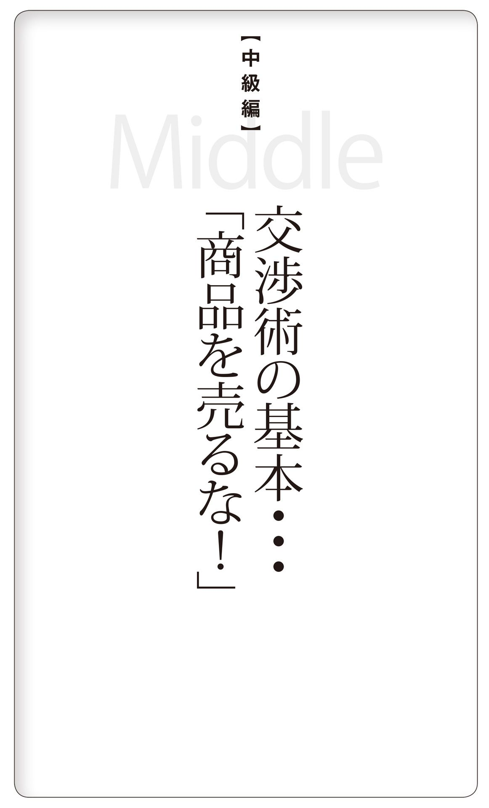
まず先に、商品ではなく〝気持ち〟を共鳴させる
開口一番に「商品を売るな！」なんていわれて混乱している人もいるかと思います。売るのが仕事なのに、それじゃどうやって営業すればいいの？って話ですよ。それでも、僕はいいます。「売ろうとしても売れない」と。
テレビ通販で僕は、日本にはこういうことが足りない、社会にはこういうことが足りないといった説明からスタートします。公的動機を説明した上で、商品の必要性を話します。テレビ通販ではふれられない商品を見せています。現品を直接見てもないのに、たとえばですがサンダルが４時間で３万５０００足売れるんです。触ってもいない、試着してもいないサンダルにお金を出してくれる。それは商品がいいからじゃなくて、心の奥で、本気で姿勢をよくしようとしているんだなと気持ちに乗ってくれたから。商品に共鳴させているわけではなく、兼子の話す内容に気持ちを共鳴させてくれている。僕が実績を残せたのは、売り上げを上げたいという自分の都合ではないからです。
必要性を訴えれば、自らゴール（＝決断）してくれる
テレビ通販の世界では新規顧客を24 時間で６００人獲得できれば御の字といわれる中、僕は４時間で新規顧客を６０００人獲得した実績があります。
「売ろうとしない」といっているにもかかわらず、どうしてそんなに売れるのか？
決して商品説明がうまいわけじゃありません。商品説明なんて僕の中では二の次。説明書を読めばわかることをしゃべっても意味がないし、時間のムダですから。
僕のプレゼンの要は、商品の必要性を訴えることにあります。ほとんどの人が商品を売りたいとき、「これはこういう商品で......」と本題に入りたがるもの。しかしどんなに上手に話したところで、興味のない商品の説明なんて聞きたくないです。むしろその売ろうとしている魂胆が見え見えです。相手はあなたのエゴを垣間見て、途端に気持ちが冷めるかもしれません。売るのに必死になっているときほど売れないものなんです。
だからまず「必要性」を説く必要があります。
僕がいう必要性とは、売り上げに関係なく、あなたがその商品を持つことでどんなふうに役に立ち、改善されていくか。その商品がつくられたからには何かしらメリットがありますから、そのよさを「気づかせてあげる」んです。人間は自分にメリットがあるとわかれば重たい腰も動きます。自ら決断して買ってくれるので、最後まで誘導する必要はないのです。これが他の通販とは決定的に違うスタンスだと思っています。たいていの通販では商品を売るために、あとづけで理由を考えている。繰り返しますが、自分が売りたいものがあると思いながら営業マニュアルをつくった人は、自分が売りたい気持ちを隠していますから、そこに小さなウソが生まれる。ウソをつきながらだとビクビクしてしまいます。僕はその真逆。プレゼンをするときに、売り上げを上げたいという自分の都合はありません。純粋に、この商品を手にすればあなたのためになる、社会のためになると思ってプレゼンに取り組んでいます。
自分がいいと信じているから、「買ってもらう」なんていう媚びた精神は微 塵 もありません。むしろ「売ってあげている」「教えてあげている」感覚に近いかもしれません。
日本人の姿勢をよくして、最終目標は日本を元気にすること。これが僕の活動のテーマです。すべてのプレゼンはテーマがもとにあって、そのために商品がある。テーマを持ってプレゼンをすると、人の心を動かせます。世の中の人は社会のために貢献したいし、誰だってヒーローになりたいと心の奥では思っています。自分が商品を買うことで、僕の掲げている「日本を元気にしたい」とテーマをサポートする一歩にもなる。お客さんの中にも公的動機が生まれるのです。
するとあなたにとって不思議なことが起こります。
お客さんの側から「売ってくれてありがとう」と感謝されるんです。
買ってもらうのではなく、売ってあげる。教えてあげる。
自信を持って提案できるし、やましい気持ちがないので主導権を握れます。
必要性を説けば、あとは決断するのを待てばいい。背中を押してあげれば勝手にゴールしてくれます。最後の最後まで見届ける必要はありません。無理してゴールさせると、お客さんは強制されたような気持ちになります。すると心のどこかに「渋々決めた」「渋々買った」など、くすぶった感覚がつきまとうのです。
子どもの勉強嫌いみたいなものですよ。親にしつこく勉強しなさいといわれて、強制されるからイヤになってしまう。誘導されるほど気持ちが冷めていくんです。
最後はゆだねる。そうすれば必ず相手が自ら動きます。
商品のよさに気づくのも、買おうと決心するのも、決めるのは相手ですから。
つまりプレゼンテーションの基本は相手が主役ということ。自分は脇役です。その上でいい意味＝善意における「売ってあげる」「教えてあげる」精神を前提で、商品の「必要性」をしっかり逆算して考えてみることです。
相手に「気づかせて」あげて公的動機を共有する
交渉は丁寧な言葉で〝追いつめて〟いくもの
プレゼンがうまくいったとしても、いざ交渉が始まればＮＯといわれることもあります。本来なら兼子のプレゼン術を実践していれば、こちらが主導権を握りながら理想通りの結果にたどりつくはずですが、それでもＮＯといわれた場合についてお話しします。まず、そこで簡単に引き下がったらダメです。こちらは勝てるテーマを持って、その場に臨んでいます。勝てるテーマを持っていると、たとえＮＯを連発されても心が折れません。プレゼンは心が強いほうが勝ちます。民主主義ではなく、精神主義。精神が強いほうに流れていく傾向があります。絶対にあきらめない気持ちがあれば、最後に勝つのはあなたなのです。
では具体的にＮＯといわれたとき、あなたが次にすることは何かというと「なぜＮＯなのか」を尋ねることです。それは相手がくれる有意義な情報にもなります。
さあ、交渉の口火を切りましょう。
たとえば「商品の価格が高すぎる」という理由。あなたにいわせれば値段以上の価値がある商品ですから、得られるメリットや必要性を説いてあげればいい。そうやって相手の抵抗をひとつひとつつぶしていく。
ここでのポイントは、相手の意見を否定しないこと。「なるほど～」「おっしゃる通りですね」と言葉を添えて、一度相手の意見を受け入れてから自分のゾーンに持ち込むんです。丁寧な口調でゆっくり焦らず相手を追いつめてください。
交渉のキモは、こういった抵抗に瞬時に切り返せるかどうかだけです。うまい切り返しができるということは、アドリブがきくということと同義です（アドリブについては、４章にて詳しく説明します）。
うまく交渉ができない人の中には、自信はあるけど心が弱くてうまくプレゼンができないという人もいます。
「心が弱い」→他人を動かせるかどうかについてだけジャッジメントしている。
「自信がある」→自分の中では納得している。
この違いが理解できますか？ １８０度、物事のとらえ方が違っていることに気がつきましたか？ ここで気づいてほしいのは、物事のよしあしというのは特にビジネスシーンにおいては、「他人が評価する」ということ。自分の自己満足の中だけで自信があるものというのは、相手の役に立っていません。どんなに自信があったとしても、それで人の心を動かせなければ意味がないんです。
情報は伝わらなければゼロと一緒。情報の価値というのは、相手が知って、納得して、感心するところまでいってよい情報となる。いい本をつくっても、人が読まなければなんの価値もない。やっぱり商品を売っているんだったら、まず手にとってもらわないとダメなんです。
ＮＯといわれたら相手を一度受け入れて切り返す
やってはいけない
交渉法
今一度確認したいのは「交渉」という意味。交渉とは自分の思い通りにことを運んだり、相手を出し抜くという意味ではありません。相手と話し合って、合意を得たり、納得することです。つまりお互いにメリットがある状態＝ギブアンドテイクが成り立つのが正しい交渉法です。
この本を読んだあなたは、おそらく相手のメリットを考えて交渉の場に臨んでいるはず。とはいえ、一方的に提案するのは相手にとって余計なお世話になりかねません。人間は感情で動く生き物です。遠回りに見えるかもしれませんが、相手との関係を築くのが先。相手の利害は見えにくいものなんです。それが初対面の相手ならなおさらです。マニュアル通りに、営業のとき取引先についてすぐ、カバンから商品パンフレットをとり出すのはやめましょう。つながりが生まれてから、本題に入るのが交渉の基本です。
また交渉の場でへりくだる必要はありません。同情を買うとか、相手に媚びてしまうと、上下関係が生まれます。
商品を買ってもらうために、商品のマイナス面を相手に伝えて、弱みを見せることで信頼を得る方法もあります。
でも僕はあえてマイナス面を伝える必要はないと思っています。マイナス面を伝えて粘って買ってもらったとしたら、自分が自信を持てない商品を売りつけたことになりますから。それって幸せじゃない。お互いに利益を得られる交渉ができると、長い目で見て今後も良好な関係が築けるはずです。
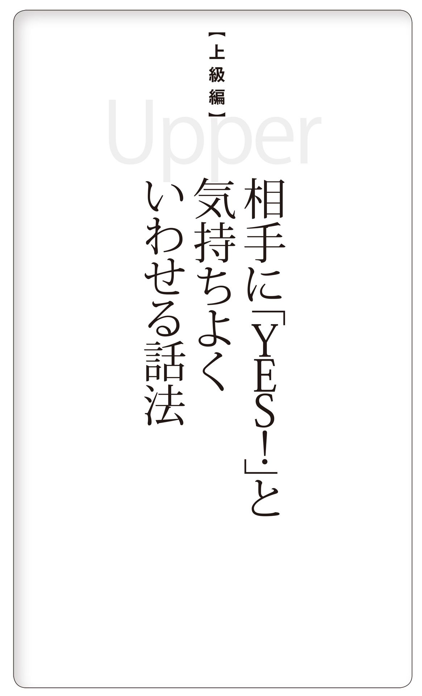
相手はもう「落とさずとも落ちている」状態です
３章の最後はプレゼンのフィニッシュ、つまり落とし方についての話です。
ここまでくるとあなたとプレゼンの聞き手やお客さんの間には良好な人間関係が築かれている状態になっているはずです。なぜならあなたは相手の立場に立ち、「相手が、社会がよりよくなるように」と教えを説くがごとくプレゼンをすすめてきたはず。
人間は本能的に、自分を理解してリードしてくれる人には喜んで従う生き物です。１章でも説明した「ドＳ」の法則です。自分を幸せな気分にしてくれる人には逆らえないし、この人のためにつくそうとする心理が働くからです。
もうあなたの意見に反対することはできなくなっています。誰だって自分を幸せにしてくれる人を邪険にはあしらえませんよね。
すでに相手を落とせる状態ではありますが、このテンションを保ったままゴールさせるにはいくつかポイントがあるので、次から順を追って説明していきます。
相手と近い距離感を保ち、集中を切らさない
会議室の広さ、聞き手の人数によって変化はしますが、ラストに向かって走り出したなら相手との距離をつめていきましょう。向かい合わせに座っている場合なら、身を乗り出して頭を突き合わせるくらいに。
なぜ近い距離で話すのか？ 心当たりがあると思いますが、相手との距離が近いほど相手の話に集中します。たとえ内容に興味がなくても、目の前で語っている人から目をそらすのはマナー違反。相手の話に耳を傾けて、マジメに聞かざるをえない状況になります。反対に、学生時代、ダダっぴろい体育館で校長先生の話を聞くときって、ぼんやりしていませんでしたか？
このように話し手との距離が離れるほど、聞き手の集中力は下がります。こちらが一生懸命話しているときに「どうやって断ろうかな？」なんて違うことを考え始めるおそれがあるんです。そんなスキを与えないためにも物理的な距離を縮めて話すことが大切です。距離をつめるのが難しい環境ならば、身を乗り出す、目線を自分に向けさせるようなボディランゲージを心がけてください。
次に、プレゼンの要点のおさらいは「しゃべり」ではなく、目で見てパッと理解できるスライドや資料を活用してください。ここは重要です。なぜなら口頭で説明するだけでは、相手は理解したような気持ちになっているだけかもしれません。聞き手の理解をサポートするものとして登場させるのがおすすめです。
「この商品を使うことで３カ月で平均３㎏やせている」
「90 ％の人のウエストが細くなった」
など数字ではっきり示すと、メリットを、実感をともないつつ再確認することができます。２章でも話したように、数字はダイレクトに頭に飛び込んでくる世界共通ワードです。使わない手はないです。ここで数字の推移を表現するときは手を上下させるボディランゲージを加えるとより一層、聞き手の理解が深まります。
ここで注意してほしいことがもうひとつ。
スライドを含め資料を決して自分のカンペにしないでください。最終段階でカンペを読まれたら、興ざめもいいところだと思いませんか。「この人、信用していいのかな？」と不安が頭をよぎります。それまで築き上げた信頼関係も水の泡です。
また、相手に見せるスライドはあくまでシンプルなものを。特に、初心者が陥りがちですが、よかれと思ってごちゃごちゃと画像を組み合わせたり、凝った動画を流すことがあります。プレゼンのポイントを理解してもらうには、最低限必要な数値やグラフがあれば十分。あまりに凝ったものを見せてしまうと、プレゼンにもかかわらず聞き手の意識が自分ではなく、スライドのみに向いてしまう危険があります。
数値の推移や実績はグラフにすれば一目瞭然です。聞き手の理解が深まれば、反応がグッとよくなります。最後まで心を引きつけることを怠らないでください。
距離感や視覚効果で集中させる方法について話しましたので、その勢いのまましめくくるためのルールを２つ紹介します。
①プレゼンの最後になって、いきなり新しい情報や材料を持ち出さない
②相手のためのプレゼンなので最後の最後で主役を自分にせず「あなた」を主役に
まず①についてです。あなたは補足で説明したつもりでも、それがまったく新しい情報だった場合はさすがに聞き手が混乱します。プレゼンの最後は、何か行動しなきゃと突き動かされたり、決断しようとしている瞬間。さあ行動を起こそうとしているときに水を差された状態になるのです。テーマは定まっているので、ここでアレコレつけ加えなくても伝わりますのでドンと構えましょう。②は、プレゼンでは体験談を交えて語るので、ときとして主語は「私」、もしくは「私たち」になりがちです。しかし、しめくくりのときは特に「あなた」に置きかえたほうが聞き手の心に響きます。「みなさん」ではなく「あなた」。この本の中でも同じく、僕は読んでくれる人ひとりひとりに語りかけているので「あなた」という表現を多用しています。
ラストは相手の集中力を保ち、まとめをビジュアルで簡潔に
売り上げを上げたいなら商人ではなく指導者になろう
プレゼンならば案件を通したいし、営業だったら売り上げを上げたい。
仕事をする上で結果を残すことは大切です。僕はこれまで何度も相手の立場に立て、社会のために公的テーマを持てと何度も繰り返しいってきました。それでも「人間、自分が一番大事に決まってるじゃん」と心のどこかで思っていませんか。
寝具を販売していた時代の話です。セールスマンがたくさんいる中で、売り上げがいいのは「少しでもいい寝具を使ってもらいたい」「寝たきりの人の状態がよくなればいい」と本気で 思っている人たちでした。反対に「営業成績を上げて金を稼ぎたい」「欲しい車があるから」といっている人たちは売り上げはおろか、仕事自体も半年ともたずに辞めていきました。その動機が「欲」だからです。
欲は求めれば求めるほど深くなっていくけれど、原動力になるほどには続かない感情です。私利私欲がベースですからたとえ金を稼ごうが、地位や名誉を得ようが人には尊敬されません。人は尊敬されたり、必要にされないと自信が持てない。自信が持てないから、また間違えた方向に向かって走り出してしまうのです。お金が欲しいなら、お金を追いかけずに公的なテーマを見つけることが先決。公的なテーマのもと働いていくうちにお金は必ずついていきます。
僕がテレビ通販でとんでもない売り上げをたたき出したのも理由は簡単で、数字を追いかけていないから。売り上げを上げるには信念がないとまず無理です。その信念から逆算していき、商品の必要性に結びつける。
日本を元気にしたい→そのためには体力が必要だ→正しい姿勢が健康な体をつくる→じゃあ姿勢教育を広めるべき→この商品なら美姿勢をつくれる......といったように。
前にビートたけしさんの番組に出演したとき、僕を含めて３人のテレビ通販のプロが集まりました。１章で書いたエピソードです。それぞれに商品を売るコツはなんですか？と聞かれたときに、ある人は「話すテンポとタイミング」、またある人は「商品の知識」と答えていました。この中で一番実績があるのが僕だったんですが、僕は「売る気持ちをなくすことだ」と答えました。他の出演者は目が点になっていました。これが商人と指導者の違いなんです。営業トークは商人がすること、プレゼンテーションは指導者がすること。プレゼンの根っこにあるべきものは「熱い思い」なので、社会に対して貢献する知恵や考え方をしっかり持っているしゃべりに昇華します。
その商品を買おうかなと思うときって、その人を尊敬していないとできない。
繰り返しますがプレゼンテーションと指導者はセットであり、商人になってしまっている人のそれは、アナウンスであり営業トークです。プロとしてのしゃべりがうまくても尊敬はされない、つまり人を納得させられません。スピーチをしてうまくしゃべっても耳を傾けてもらえない。
テレビ通販でも元アナウンサーや芸能人としてものを売ろうとしている人がいます。彼らは前述したように売るのに困っています。芸能人＝有名人というのは影響力があるけど、その人たちがものを売るとき、なんとなくそれらしくうまくしゃべってお客さんをまるめ込んで、商人になろうとしている姿はあわれ です。指導者としての専門性や知識があるわけではありません。もし彼らがきちんと社会に必要性があることを納得して、自分なりに消化してプレゼンをしたら今の３倍くらい反響があるはずです。その差は人に対して指導をする「教育力」があるかないか......それだけ。
人の心が動くのは必要性を感じたとき。また誰でも人のために役に立ちたい〝ヒーロー願望〟がありますので、社会に貢献できるテーマを見せ、導いてあげてください。
自分が誰よりも幸せになりたいなら、自分より先に相手を幸せにしてあげる。幸せになるためには順番がある。相手にメリットを与えなければ、自分に見返りなんてあるわけない。世の中はギブアンドテイクですから簡単な理屈ですよね。
人の心が動くのは「必要性」を感じた瞬間から
おうかがいは立てない。優位に立ちながら話す
プレゼンのラストは聞き手に決断させる時間帯となり、比例して関心が高まっていきます。僕の場合だとそれはテレビ通販の生放送終了直前にあたります。かなり切迫感があるシーンですが、他の人がよく口にする「いかがでしょうか？」「買ってください！」なんて絶対にいいません。むしろ逆です。
「こんなにいいものがあるのに買わないなんておかしい」
「人のためになる、社会のためになるのになんで買わないの？」
さすがにこんなふうには直接いいませんけど、買うことが当然という話し方をします。すると、相手にも「買うことが当然」と刷り込まれていくのです。
たとえば、あなたが使っている携帯の料金プランがすごくお得だとわかったとします。これを家族や友達に教えてあげよう！と思ったときに、「もしよければ、このプラン使ってみて」とはいいませんよね。
「絶対お得だから使ったほうがいい！」「使わなきゃ損だよ！」といいきりませんか？
自分が絶対の自信を持って商品やサービスを紹介するとき、人は断定した話し方をするんです。それこそ腹の底から相手のメリットになると信じている証拠。根本にはやはり信念がありますからブレることはありません。こんな自信満々な人に当然のようにハッキリと商品をすすめられたら、最初は半信半疑でも次第に気持ちが共鳴してきます。
自信なさげに「いかがですか？」と切り出してもこうはいきません。断る選択権を相手に与えているともいえます。
人がお金を出しても欲しいと思うのは、得たことによるメリットが明確になり、動かされたときです。ひとつの手として、得なかったことによる損や恐怖をあおるようなカードを切るのもありだと思います。
自信を持って当然のようにハッキリいいきるだけ
やってはいけない
売りつけ方
僕がテレビ通販の出演を依頼され、テレビ局でスタッフさんと打ち合わせをしたときのことです。
開口一番に「僕は『ありがとうございました』『金額は×××円です』といいませんが、それでもよろしいですか？」と質問をしました。ある意味、基本を無視した提案です。
金額を伝えたり、売れたらお客さまに感謝するのは、世間的にはものを売るときの鉄則です。しかし、僕にとっては質のいい商品を提供できないときにいうセリフなんです。
テレビ通販とは、プレゼンテーションに形を変えたセミナーです。つまり、プレゼンターである僕は教えてあげる「先生」なんです。相手に得になることを伝えているわけですから、感謝されるのは僕のほう。それが本質です。
商品を売ること＝目先の欲にかられて、相手を持ち上げてまでものを売るのは商人のやること。「じゃあ買ってあげよっか」とナメられちゃダメなんです。
恋愛でも「お願いだからつき合って」なんていうと自分の価値が下がります。それと同様で「買ってくれてありがとうございます」と媚びたら、商品価値を下げることになる。ゴリ押しして買ってもらってもその場では成功かもしれない、でもあとでもめるのが目に見えています。寝具を販売していた時代に「ノルマが厳しくて、お願いですから買ってください」と懇願して買ってもらったことがありますが、結局、途中で解約となり、長期的な目線では不成立になりました。
相手のメリットを満たせば、お願いしなくたって売れます。
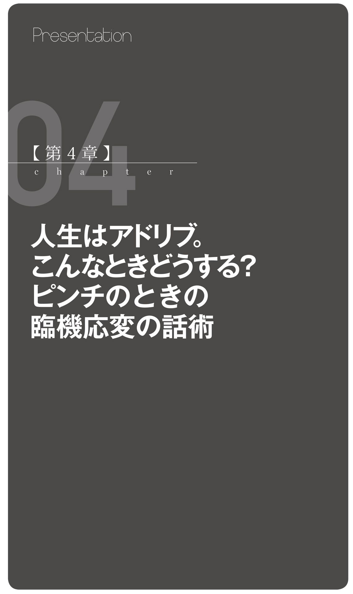
アドリブは「アクセル全開」の先で身につく力
アドリブとはリアルな実力です。
カン違いされやすいのですが、アドリブはその場の思いつきではなく、臨機応変に対応できるコミュニケーション力ともいえます。つまりコミュニケーションをはかる実力がない人は、いざというときアドリブがききません。
アドリブ力が身につきやすい状況は何かというと、基本的には人前です。
人前で話すときに自分の持っているものをすべて出しつくす。自分が話せることや思いついたことを全部書き出して、全部発表します。出し惜しみして「これはしゃべる」「これはしゃべらない」のような状態だと非常にアドリブが出しにくい。もしくはアドリブを思いつくような考え方が出しにくい。もう話すことがなくて、頭がすっからかん！ それでも話し続けようとアクセル全開状態になるとアドリブが身につくんです。
だから台本をつくるときに、これは書くけど、これは書かない。これは伝える、伝えない。そうじゃなくて自分の思いついたことや考えたことはすべて出し惜しみしないで、サービス精神を持って人に伝える努力をしたほうがいいですよ。
それを口に出して話していくと「あ、これもしゃべったほうがこの人のためになる」とその場で思いつくものです。
アドリブはそういった人情があるところから生まれるんです。
事前に出し惜しみをしないですべて相手に伝える努力をするのも、本番前からアクセル全開にするため。そうすれば、本番ではアドリブがきく状態で臨めます。
「アドリブがきく＝人見知りをしなくなること」でもあります。すべては、プレゼンテーションは相手のためですから、自分をとりつくろう余裕もない。ですから場数を踏むごとにアドリブ力は磨かれていきます。
プレゼンの場数は１対１でも成立します。大人数だけではありません。
ナンパもプレゼンだし、取引先の人と飲みにいくのもプレゼン。最近は、必要以上にコミュニケーションをとらない人が多いけど、他社の人と友達になって連絡をとり合う仲になるとか、そういうようなことをやるといい。
何も仕事の場だけじゃなく、ゴハンを食べにいったときに店員さんとか、マッサージ店ならマッサージ師さんと。そういう人たちと話すだけでも日常生活の中で特訓になる。しゃべりの経験をどんどんストックしている状況ですから。
だから私生活がつまらないヤツって、アドリブがきかないんですよ。
私生活での人との交流、買い物やおしゃれやおもしろいことをやっているとアドリブがきくんです。経験のストックが多い分、目の前で起きるできごとや話されている話題に関連づけて話せるはずだから。いつもの自分だったら話さない場面で話しかけてみる。いつも断りがちだった会社の集まりに参加して、あんまり話したことがない人に話しかけてみる。たったそれだけのことです。
しゃべりはしゃべりでしか鍛えられません。そのことを忘れないでください。
次からは、具体的にアドリブが求められるプレゼンシーンについてお話しします。
会場の雰囲気がよくないとき、やる気のない人が会議にいるとき、完全アウェイのとき......など、プレゼンでピンチを迎えそう、迎えたときにどう乗り越えればいいのかの現場術をアドバイスします。
本番前の緊張は早めの会場入りで和らげる
２章、３章で学んだとはいえ、最初から緊張せずに本番を迎えられる人は少ないでしょう。特に本番直前は恐怖心が高まるかと思います。その不安を和らげるためにおすすめしているのは、早めに会場に入ることです。
たとえ見慣れた会議室であっても、いつもの打ち合わせとは状況が違います。
実際にどこに立てばいいのか、ホワイトボードの位置やスライドなどの画像がきちんと動くか......確認することはたくさんあります。プランを練って、対策を立てるだけでも心の負担は軽くなります。不安がひとつ消された分、それは小さな自信に変化していきます。本番直前で得た自信はプレゼン中までいい影響を与えてくれるはずです。
また始まる前に会場に入ると、聞く側のひとりひとりにその人たちのニーズや目的はなんなのかを聞くことができるメリットもあります。それくらいの時間はありますから、コミュニケーションをとる努力をする。これは難しいことじゃないです。時間きっかりじゃなくて、15 分前に会場に入ればできること。始まる前からプレゼンはもう始まっているのです。
プレゼンに完璧な台本をつくるなと何度も書いてきましたが、プレゼンの概要を書いたメモをポケットに入れておくくらいはＯＫです。何かあったらメモがある。そう思えば心にひとつ余裕が生まれますから。
完全アウェイは存在しない
さて、プレゼンがスタートしました。でも明らかに聞く耳を持たれていない状況のとき、あなたならどうしますか？
僕なんかももちろんありますよ。某団体の職員８人にセミナーをやったことがあります。当初は30 ～50 人集まるといわれて会場に入ったら、なんと８人しかいなかった（笑）。相手は50 代のおじさんばかり。話すテーマは決まっていましたが、それを話したところで成功とはいえません。
そこで僕がやったことは２つ。
１ おじさんたちとコミュニケーションをとる
２ おじさんたちが何を聞きたいのかリサーチする
たったこれだけです。自分が何者で、なんのためにここに来たかなんてわかってもらおうとはしません。でもほとんどの人は自分をわかってもらおうとする。そんなこと、おじさんたちは求めてないんですよ。どうせ２時間も話を聞いて、イスに座ってなくちゃいけないんだから、「来てよかったな」と思わせる。せっかくなら利益を得てもらおうと頭を切りかえたんです。
最初は「どこか体に痛いところありませんか？」とか「ゴルフは飛びますか？」「飛ばないね～」なんてやりとりでスタートしました。人数が少ないと盛り上がりにくいデメリットはあるけれど、裏を返せばひとりひとりと密にコミュニケーションがとれる。相手を変えるんじゃなくて、自分を相手に合わせて変えたんです。アウェイだと思っても、相手が求めているシンプルな欲求にこたえていけば、ホームに変わる。このプレゼン本を読んでもらうとわかるけど、本来ならアウェイって存在しないんですよ。
僕は公的な話をしにきている。つまり、教えにきているんだから。相手に媚びへつらう必要なんてありません。
アウェイと同様に一生懸命話していても、反応が薄くて、誰もこちらを見ていない状況もあります。誰も聞いていないように思えるかもしれませんが、そんなことは絶対にありえない。それは勝手な自分の思い込みだと割り切りましょう。ただ、日本人は聞いていないフリをする人が多いです。冷静を気どるのが好きというか。でもそれはポーズだけであって、絶対聞いていますよ。
ムリな内容はメリットと結びつけて展開
プレゼンは口ゲンカや口論ではありません。
話し方のテクニックで説得するものではないのでテーマ決めが肝心。ムリかもしれないと思うのは、自分の中でテーマが明確に定まっていないのかもしれません。相手のメリットと結びつけていけば、ムリな内容ではなくなるはずだからです。
トークテクニックを磨くのではなく、まず、なぜ自分でもムリとわかる内容を通す必要があるのかを考える。相手を納得させたいなら、自分が納得するのが先。
頭が真っ白になったら質問しよう
そもそも２章をしっかり読んで実践していたら緊張する事態には陥らないはずなのですが、万が一......頭が真っ白になったときの対処法を教えます。
自分が何を話していいかわからなくなってしまったなら、その場にいる人に質問をしましょう。内容はなんでもいいから聞いちゃう。質問はプレゼンにまつわる難しいものじゃなくていいです。
たとえば「すみません、ちょっとエアコンききすぎてないですか？ 寒くないですか？」など、ちょっと話題をそらせる。できれば相手がこう答えるだろうなと想定できる質問がベターです。想定できる＝先の展開が読めるので、その人があなたの予想通りに答えている間に時間稼ぎができますから。その時間をフル活用して、頭の中で話す内容を考えておくのも手です。
言葉につまってしまうと、沈黙に耐えられず言葉と言葉の間を埋める「え～」「あの～」を使いがちです。意味のない言葉ではありますが、あまり連発すると話の内容まで心もとなく感じてしまうので注意してください。たとえ沈黙しても、決して「ミス」だと思わないことが肝心です。しまった！ どうしよう!? なんて顔をしちゃダメですよ。むしろ沈黙は恐れることはありません。涼しい顔をして〝間を置いた〟風にふるまいましょう。実際、スラスラとしゃべり続けるより、〝一気に要点を話して、適度に間をつくる〟ほうがずっとメリットがあります。
・わずかな沈黙の間に、次に話すべき内容を考えることができる
・間をつくることで、直前に話した内容に重厚感を与える
・話の流れに区切りをつけられる
以上のように「間」には実に多様な使い道があります。話し手にとってだけではなく、聞き手にとってもメリットになります。なぜなら間をおくと聞き手には話の内容を理解し、頭の中で整理する時間になるのです。
さらに、間があることで話に緩急が生まれ、聞き手は最後まで飽きることなく耳を傾けてくれるでしょう。お経のように一定のリズムで、一定の間で耳に入ってくるのがどう考えても一番つらいですよね。
変化がないから、刺激がない。刺激がないから、飽きる。飽きてくると退屈になって眠くなります。この悪循環にはまらないように間を使いこなしてほしいです。
急に否定されてもひるむ必要はない
プレゼン中に、上司や先輩から否定の意見が上がったとします。相手は自分より経験を積んだ社会人で、ごもっともな意見かもしれません。でも、あなたにはあなたのテーマがあり、その場に臨んでいるわけですから丸め込まれる必要はないんです。
その場合、「それは違います」と相手の意見を真っ向から否定し返すんじゃなくて、「僕は 違います」と答える。否定すると口論に発展する危険があるけれど、「なるほど～。でも僕は違う意見で......」とあくまで意見のすれ違いをアピールする。否定ではなく、自分の意見は別のところにあると主張すればケンカになることはありません。
本番の経験こそ必ず自分の力に変わる
パニックになる、緊張するっていうのは何度もいうように準備が整っていないから起こることなんです。でもたとえ失敗したとしてもきちんと反省すれば問題ありません。
実力ってピンチを迎えたときに養えるものです。切羽つまっているときに、次の手を模索しようと集中力が高まるので、実は力をつけるチャンスでもあります。
僕が20 代のときに、接骨院を経営しようと思ったことがあります。
お金を払って資格を持つスタッフを雇い、自分はオーナー社長になるつもりでした。物件も探して、雇うスタッフも見つけて、オープンしようとした矢先にその資格を持っているスタッフが辞めちゃったんです。
国家資格を持つプロがいなくなったので当然オープンなんてできない状態に陥りました。そこで、僕自身が必死に勉強し始めたんですね。オーナーから資格を持った施術者になろうと。短期の専門学校やセミナーに参加したり、専門の先生に会いにいったりしました。当時は、寝具の営業をやり、キックボクシングをやり、お店を出すための勉強を同時にやっていました。あの頃はしんどかったけれど、今はあのときにバックレた人がいてよかったなと思っているんです。あの人がマジメに働いていたら、僕はお金を払って人を雇うだけ。今の僕はここにいないですから。
「ピンチはチャンス」ってただの負け惜しみに聞こえるじゃないですか。でもその真意は、ピンチのときに人間は集中力が増す。集中力が増しているときにやったことは次につながる。だからピンチはチャンスなんです。
プレゼンでの失敗やピンチは、この先の糧になります。集中力が出る貴重な時間だと思えば、その苦しさやつらさもありがたいと思えませんか。
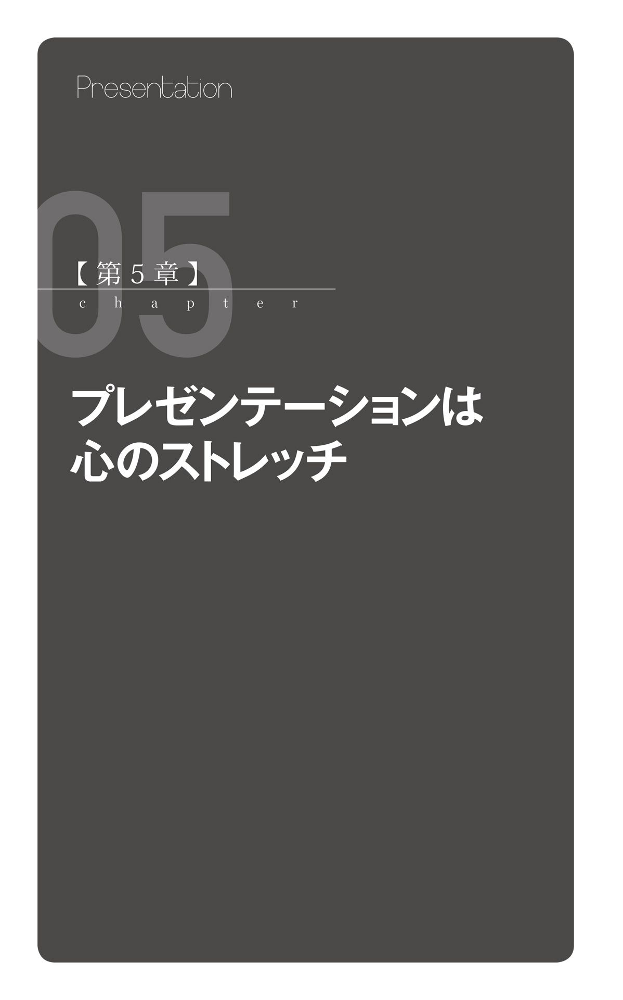
プレゼンは心を変える〝心のストレッチ〟
プレゼンは人の心を矯正します。なぜならプレゼンテーションの基本は、社会に役立つテーマを自ら考え、発信していくことにあるからです。誰かが決めたこと、すでに決まっていることを話すわけではなく、熱い思いを持って自分自身を語ります。その積み重ねがいつしか自分の心まで変えてくれる。
まさに心のストレッチであり、心の矯正なのです。
プレゼンが心のストレッチであるなら、僕の専門であるストレッチは体の矯正です。これまでも、心が変われば行動が変わるとお話ししました。またその逆もあり、行動や体が変われば心も変わります。
５章では、ストレッチを用いて〝行動から心へのアプローチ〟を紹介します。
美姿勢を手に入れるストレッチ、美姿勢を保つ呼吸法、オーラのある堂々とした歩き方をあなたに授けます。いわばプレゼン用の最強ストレッチです。
姿勢が美しければオーラが生まれます。さらに正しい姿勢を保つための呼吸法は大きくて深みのある声をもたらします。それは知的で説得力のある声です。
想像してみてください。目の前にあらわれた人が、オーラをまといながら、つい引き込まれてしまう声でプレゼンをスタートする。「ん？ ちょっとデキるっぽいし、聞いてみようかな」と話し手に好意的な環境ができあがるのです。たとえ、本番が不安で不安で仕方なくても、姿勢や立ち居ふるまいが堂々としていれば自然と不安もやわらぐことでしょう。猫背で自信満々に見える人がいないように、美しい姿勢でビクビクしている人はいません。
紹介するストレッチは、ほとんどがプレゼン前の５分程度でできる簡単なものです。心を落ちつけるために、もしくは気合いを入れるためにぜひとり入れてください。
心と体、両方からアプローチをかければ、怖いものはありません。
兼子が教えるストレッチは一生ものです。今日、覚えてしまえば60 才になっても70 才になっても使える不変のもの。簡単ですからすぐに始めてみましょう。
オーラと深く大きい声は体の中心から
美姿力。それは美しい姿勢をつくる力のことです。美姿力アップの第一歩は体の中心にあるおなかをストレッチすることから。要はろっ骨とおなかの境目にある「横隔膜」を伸ばす。横隔膜がしなやかに伸びると腹式呼吸になり、姿勢、声質ともに向上します。
横隔膜をほぐすストレッチ①では、息を吐いたときにおなかをへこませ、吸ったときにふくらませることで、かたくなった横隔膜をほぐしていきます。
平らな場所にうつぶせになり、脚は肩幅くらいに開く。手は胸の横にセット。
腕を使って体を起こす。足先からおなかまで伸びていることを意識し、肩を後ろに引くようにして上半身を伸ばす。呼吸は、口からフーッと、おなかをへこませて息を押し出すように吐くのがポイント。
今度は息を鼻で吸って、一度息を止める。おなかの下まで息を行き渡らせるようにして、おなかをふくらませる。 と を１セットとして３回繰り返す。
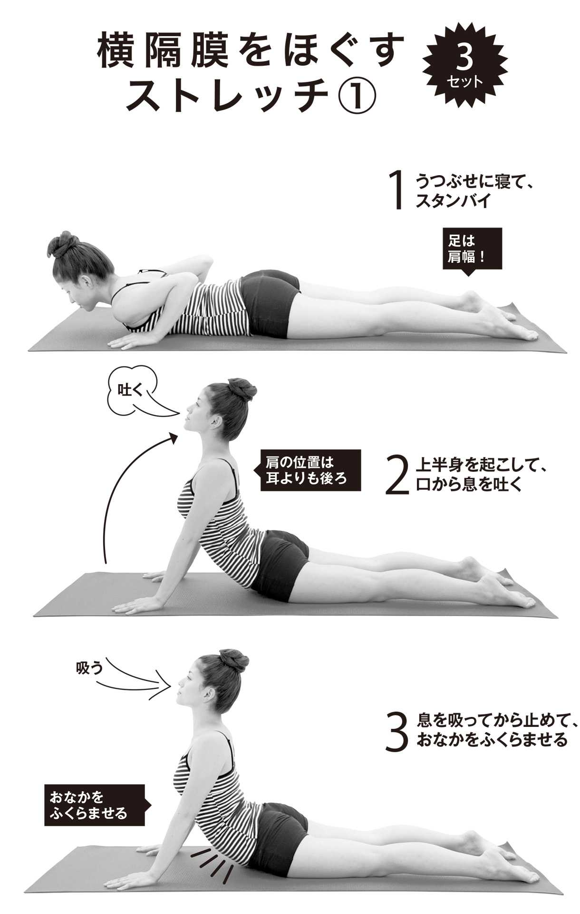
横隔膜を伸ばす感覚をつかめば姿勢も声も美しく
横隔膜がストレッチされる感覚が身につくと、普段の呼吸が腹式呼吸になり、それにともない発声も深くて、人に届く声になります。兼子のストレッチはインナーマッスルをやわらかくします。先ほどの横隔膜をほぐすストレッチ①を実践して、横隔膜がやわらかくなった状態です。次のストレッチはより効果が高まるように手で圧をかけながら行います。一連のメリハリをつけて、テンポよく行うのがポイントです。
あお向けになってひざを立て、ろっ骨とおなかの境目にある横隔膜に手をおく。息を吐いたときに、横隔膜をゆっくり押す。
息を吐ききったら、横隔膜を押していた手をゆるめ、鼻から息を吸う。おなか全体に息をため込んだらそのまま息を止めて５秒キープ。こちらも３セットを目安に。
以上のストレッチを実践すると、縮こまっていた横隔膜がほぐれ、前屈体操したときに驚くほど体がやわらかくなっているはずです。
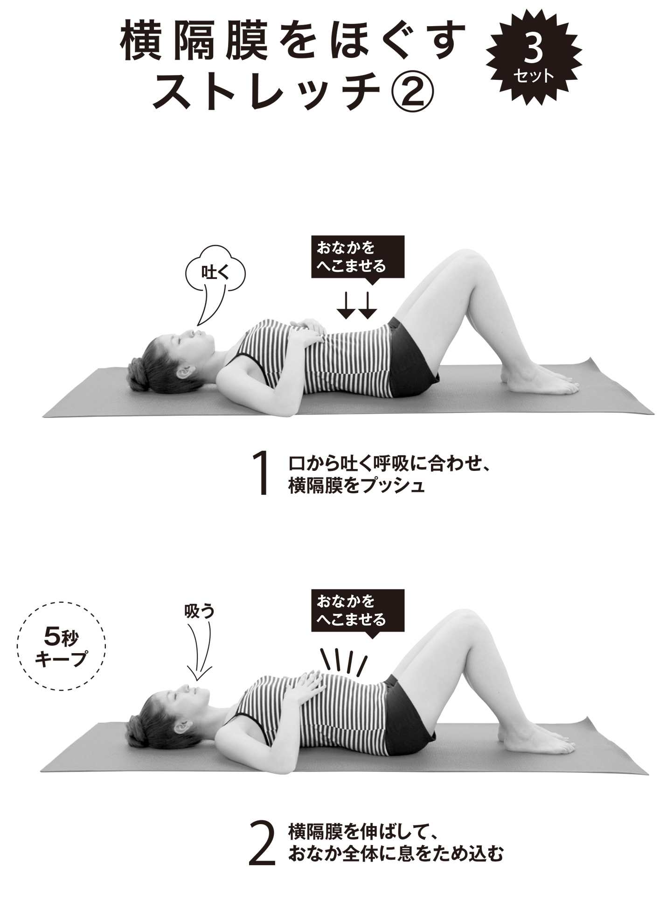
美姿勢には背中全体にアーチがつくられている
さて、横隔膜がやわらかくなり美姿勢をつくる準備が整いました。「姿勢がいい」こととは背中がまっすぐ伸びていることだ、と間違えた解釈をしている人が多くいます。美しい姿勢とは、背骨がＳ字湾曲している状態であり、その背中には必ずアーチが生まれます。ここでは背中全体にアーチをつくりつつ、横隔膜も伸ばせるストレッチを紹介します。このストレッチをすると美しい姿勢がキープできます。
支点となる股関節に手をあてて、支点がズレないよう体を安定させる。上半身は胸を斜め上に上げるように姿勢を正して。
上半身を前に45 度倒し、背中とおなかを伸ばして、背中のラインがアーチを描くように。腰だけそろうとすると痛めるので、背中全体を使って大きくアーチを。
ひざを曲げ、お尻を上に突き出して、さらに背中のアーチを深くする。そのまま５秒キープ。３セット繰り返す。
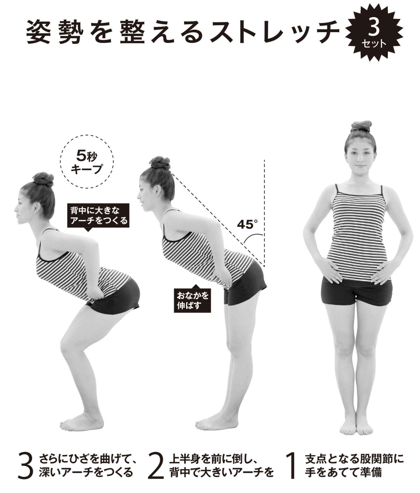
正しい姿勢を身につけてオーラを出す
オーラがある、存在感があるとは姿勢の美しさによるものだとお話ししました。
人間の背骨は本来、Ｓ字に曲がっています。正しいカーブを描いていれば、動きやすくて疲れにくい。何よりも見た目が美しくて、オーラを放てるのです。
姿勢を整えるとき、肩は後ろで、胸を張って......とパーツごとの調整は難しいですが、このストレッチならすぐに正しい姿勢をつくれます。
足をそろえて立ち、ろっ骨とつながっている背中の骨に手の甲をあてる。
横隔膜を伸ばすようにおなかを張って、胸を上に引き上げる。このときあごが上がらないよう、目線は正面を見たままで。
胸を引き上げたままで、ろっ骨と背骨全体を前にスライドさせる。手をあてている部分から背骨全体を前に動かすようなイメージで。そのまま手を体の横におろせば、背中に正しいＳ字カーブが完成！
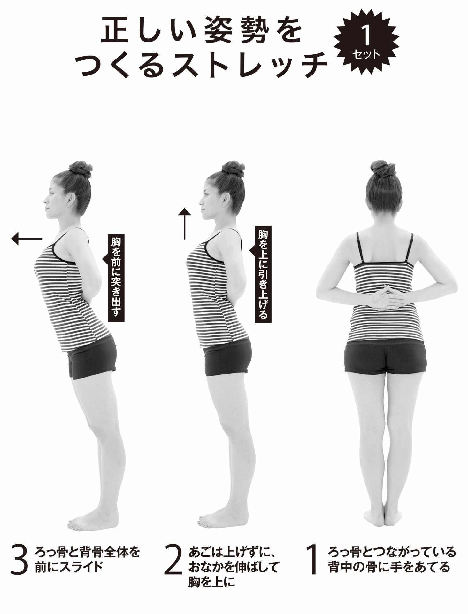
腹式呼吸でいつでも美姿勢をキープしよう
みなさんは横隔膜をやわらかくして、正しい姿勢をつくれるようになっています。たったこれだけのプロセスであなたの存在感は見違えているはずです。次に仕上げとして、この美姿勢を安定させる方法を教えます。姿勢を保つのに使われる筋肉は体の深部にあり、この筋肉は深い呼吸を繰り返すことで維持できます。
骨盤の中央にある「丹田」の位置を確認。ここを意識しながら呼吸を行う。
息をフーッと吐きながらおなかを引っ込める。おなかを内側に引きしめるイメージ。
息を吐ききったら、鼻からゆっくりと吸い込む。同時に、体を内側から伸ばすように、おなかをふくらませる。この丹田呼吸を３回繰り返す。
胸だけで息をすると肩が上がって首が縮こまりますが、丹田での呼吸をすると肩やあごが上がらず美姿勢をキープ。この呼吸ができれば、力まず、無意識でも姿勢がくずれにくくなるのです。
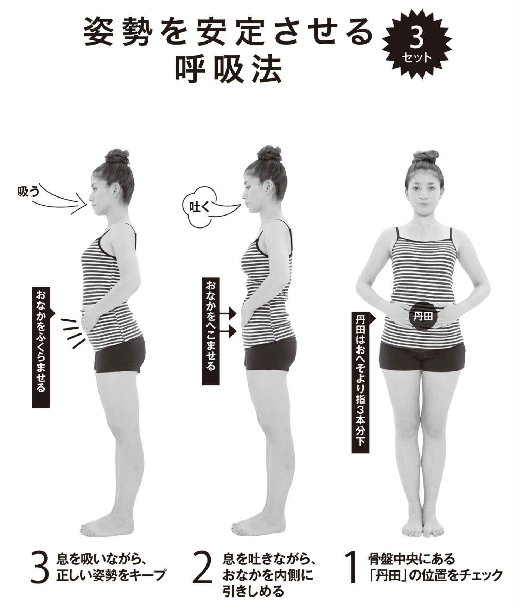
人前でも堂々と！ 魅せる立ち居ふるまい
プレゼンでは基本的に立ったまま進行するケースが多く、またそれ以外の場でも人前で立ったり、歩いたりすることがほとんどです。たとえば、面接や営業先で。ドアを開いてイスに着席するまでの10 秒。オーラのある歩き方で登場したら第一印象が格段に上がります。これから説明する美姿勢ウォーク、ぜひとも実践してください。
姿勢が悪いと体重移動がうまくいかないので、一歩を踏み出す前にまず美姿勢に。
ひざを伸ばしたまま右脚を前に。歩幅が広すぎるとひざが曲がり、体重移動が難しいので、慣れないうちは狭めがベター。
後ろにある左脚で体を前に押し出すように、全身を前にスライド。
今度は左脚から一歩前に歩き出す。
後ろにある右脚で体を前に押し出したときは、左のつま先、おなか、胸が一直線になるように。 ～ を繰り返して、スムーズに歩く練習をしよう！
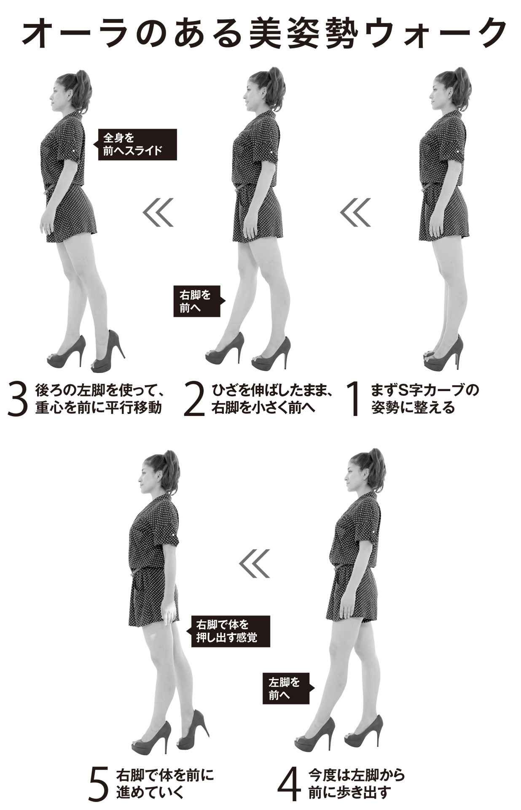
お わ り に
１２０時間で31 億円。あなたがこの本を手にとったきっかけは、もしかするとこのタイトルを見て金もうけできると思ったからかもしれない。僕のことを全然知らなくても、やっぱりドキッとするタイトルですから。しかし、最後まで読んでみて、予想をはるかに裏切られたのではないでしょうか？
社会で働くためには、２種類の活動法を自分の中に持たないと行きづまります。ひとつは金を稼ぐ経済活動、もうひとつは社会のためになる社会活動＝公的動機です 。
僕の社会活動はストレッチを通じた姿勢教育であり、ストレッチという教育を世に広めること。信念を持って働いている今、僕はとても豊かです。
豊かとは荒稼ぎしているとか金銭的な意味ではなく、仕事を通して社会に貢献できる充実感、目的に向かって自信を持って働ける喜びにあふれていること。結果がどうであれ、常に堂々と熱い思いを持てるのです。社会のためを考えずに自分だけ成功を願っているようじゃ、いつまでたっても程度の低い人間のまま。程度の低いヤツがプレゼンで何を話したって、人の心に響かせることはできません。
この本を通して、技巧的なテクニックではなく、スキルを手に入れてください。プレゼンの本質を学び、ありかたを見直すきっかけになることを願っています。社会活動を実践していけば、ちゃんと経済活動も活性化してきます。金を追い求めて働いても金は手に入らない。追いかけるのをやめたときに、向こうから歩み寄ってきます。
これからの日本は復興の時代です。経済活動の心＋社会活動の心＝の２種類の心が必須なのです。僕はそれを持っているのが、もっとも充実した社会人だと思っています。
みんなが〝公的のために〟働き出したら国が発展していきます。あなたの信念が日本の社会を活性化し、日本を元気にするのです。信念が定まれば、心が定まります。プレゼンで心と信念が定まった人が、この本を通じて誕生することを願います。
兼子ただし
ストレッチトレーナー・姿勢研究家
兼子ただし Tadashi Kaneko
ＳＳＳ（スリーエス）代表取締役。言わずと知れたドＳトレーナー。日本初のストレッチ専門店を開業し、雑誌・テレビで日々活躍。また、42 才で現役のキックボクサーでもある。体脂肪は４％。経営するスポーツストレッチＳＳＳ（スリーエス）は現在、全国８店舗で後進を育成。書籍分野でも『ドＳストレッチシリーズ』（主婦の友社刊）は累計40 万部をはじめ、ベストセラー連発。「くびれの教祖」として有名ＴＶ通販番組では５日で31 億円の売り上げを上げるなど、時間あたりの売り上げ、新規顧客獲得など通販業界に革命を起こすプレゼントークが話題。10 代で少年院を卒院、20 代では日本一布団を売った男に、30 代にはストレッチ専門店を開業。実業家と現役アラフォーキックボクサーとして二足のわらじをはきながら、現在は「姿勢教育の義務教育化」を目指している。
１２０時 間 で31 億 稼 ぐ男 の超 話 力
著 者 兼 子 ただし
発行日 ２０１３年８月28 日
発行者 荻野善之
発行所 株式会社主婦の友社
〒１０１－８９１１
東京都千代田区神田駿河台２－９
制作日 ２０１４年８月５日
©Tadashi Kaneko 2013
〈ご注意〉
本電子書籍に記載された内容やデータは、原則として底本発行時の取材・執筆内容に基づきます。
旧字体・異体字など、一部底本とは異なる新字体にあらためられている箇所があります。
本電子書籍の全部または一部を無断で複製・転載・改竄・公衆送信すること、および有償無償に関わらず、本データを第三者に譲渡することを禁じます。
個人利用の目的以外での複製等の違法行為、もしくは第三者へ譲渡しますと、著作権法、その他関連法によって処罰されます。